<!doctype html>
<html lang="en">
<head>
  <meta charset="utf-8">
  <meta name="viewport" content="width=device-width, initial-scale=1">
  <title>arxiv digest — 2026-10-16</title>
  <style>
:root {
  --bg: #ffffff;
  --fg: #1f2328;
  --muted: #59636e;
  --border: #d0d7de;
  --card: #f6f8fa;
  --link: #0969da;
}
body {
  max-width: 980px;
  margin: 0 auto;
  padding: 2rem 1rem 5rem;
  font-family: -apple-system, BlinkMacSystemFont, "Segoe UI", Helvetica, Arial, sans-serif;
  line-height: 1.55;
  color: var(--fg);
  background: var(--bg);
}
a { color: var(--link); }
img { max-width: 100%; height: auto; }
pre, code { background: var(--card); border-radius: 6px; }
pre { padding: 1rem; overflow-x: auto; }
blockquote { border-left: 4px solid var(--border); padding-left: 1rem; color: var(--muted); }
details { margin: 0.6rem 0; }
summary { cursor: pointer; font-weight: 600; }
.paper-figures-scroll {
  display: flex;
  gap: 1rem;
  overflow-x: auto;
  overscroll-behavior-x: contain;
  padding: 0.75rem 0.25rem 1rem;
  margin: 1rem 0 1.25rem;
  border-top: 1px solid var(--border);
  border-bottom: 1px solid var(--border);
  scroll-snap-type: x proximity;
}
.paper-figure-card {
  flex: 0 0 min(260px, 72vw);
  scroll-snap-align: start;
  background: var(--card);
  border: 1px solid var(--border);
  border-radius: 12px;
  padding: 0.55rem;
}
.paper-figure-card img {
  display: block;
  width: 100%;
  max-height: 240px;
  object-fit: contain;
  background: white;
  border-radius: 8px;
}
.paper-figure-caption {
  display: block;
  margin-top: 0.5rem;
  color: var(--muted);
  font-size: 0.85rem;
}
.figure-strip-hint {
  color: var(--muted);
  font-size: 0.9rem;
  margin-bottom: -0.3rem;
}
</style>
  <script>
    window.MathJax = {
      tex: {
        inlineMath: [['$', '$'], ['\\(', '\\)']],
        displayMath: [['$$', '$$'], ['\\[', '\\]']],
        processEscapes: true,
        processEnvironments: true
      },
      options: {
        skipHtmlTags: ['script', 'noscript', 'style', 'textarea', 'pre', 'code'],
        ignoreHtmlClass: 'tex2jax_ignore',
        processHtmlClass: 'tex2jax_process'
      }
    };
  </script>
  <script id="MathJax-script" async
    src="https://cdn.jsdelivr.net/npm/mathjax@3/es5/tex-chtml.js"></script>
</head>
<body>
<header style="background-color: #333; color: white; padding: 15px; margin-bottom: 20px;">
  <h1 style="margin: 0; font-size: 24px;">
    <a href="https://ochelpan.github.io/arXiv_clean/" style="color: white; text-decoration: none;">Main</a>
  </h1>
</header>

<h1>Daily arXiv Report</h1>

<hr>
<p>
<a href="index.html">← Index</a>
 · <a href="papers_01.html">← Previous</a> · <a href="papers_03.html">Next →</a>
</p>
<hr>

<h2>Papers 21–40</h2>
<p><a id="paper-2610.19544"></a></p>
<h3 id="shot-and-noise-aware-pauli-correlation-encoding-for-max-cut-experiments-on-ibm-heron-quantum-processor"><a href="http://arxiv.org/abs/2610.19544v1">Shot- and Noise-Aware Pauli Correlation Encoding for Max-Cut Experiments on IBM Heron Quantum Processor</a></h3>
<p><strong>Authors:</strong> Achraf Boussahi<br>
<strong>Type:</strong> both · <strong>Category:</strong> quantum information and computing · <strong>PDF:</strong> <a href="https://arxiv.org/pdf/2610.19544v1">https://arxiv.org/pdf/2610.19544v1</a><br>
<strong>Analysis basis:</strong> full PDF text, analyzed in chunks
<strong>Topic relevance:</strong> 🔥 <code>QC/QI experiment</code> <strong>4/5</strong> · <code>quantum measurements</code> <strong>2/5</strong></p>
<div class="figure-strip-hint">↔ Scroll figures horizontally</div>
<div class="paper-figures-scroll">
<figure class="paper-figure-card">
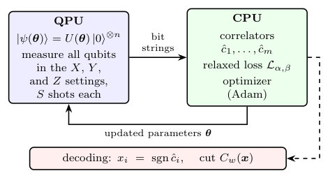
<figcaption class="paper-figure-caption"><b>Fig 1.</b> FIG. 1: The Pauli correlation encoding pipeline. The quantum computer (QPU) prepares the parameterized state and measures it in three settings. The classical computer (CPU) estimates the m correlators from the recorded bit strings, evaluates the relaxed loss of Eq. (7), and updates the circuit parameters. After training, the spins are decoded from the signs of the measured correlators, and the cut of Eq. (1) is evaluated classically.</figcaption>
</figure>
<figure class="paper-figure-card">
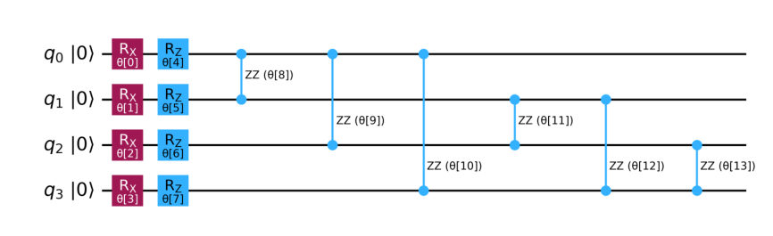
<figcaption class="paper-figure-caption"><b>Fig 2.</b> FIG. 2: The two ans¨atze of this work on four qubits, drawn with the Qiskit circuit drawer [40]. Each box is a single-qubit rotation RX or RZ with its own parameter θ[p], and each pair of dots joined by a line and labeled ZZ is a two-qubit rotation RZZ(θ) = exp(−iθZ ⊗Z/2) with its own parameter; the parameters are numbered in the order of our implementation (Appendix G). (a) Two consecutive layers of the native brickwork ansatz of Eq. (9), whose two-qubit rotations only couple neighbouring qubits of a chain. The gray bars mark the beginning of each layer, and the pattern of pairs alternates between odd layers ℓand even layers ℓ+ 1. (b) One layer of the all-to-all ansatz, which couples every...</figcaption>
</figure>
<figure class="paper-figure-card">
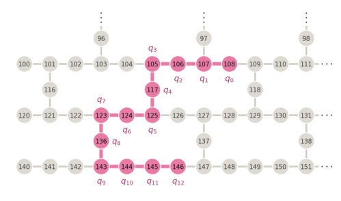
<figcaption class="paper-figure-caption"><b>Fig 3.</b> FIG. 3: Part of the qubit layout (vertices) and connectivity (edges) of the IBM Fez quantum processor [42], a Heron r2 processor with 156 qubits on a heavy-hex lattice and CZ entangling gates. Only the three bottom rows and the first twelve columns are shown; the dots indicate where the lattice continues. The 13 qubits of our hardware experiments (highlighted, q0 to q12), selected by the transpiler from the calibration data at the time of execution, form a chain onto which the two-qubit rotations of the native ansatz map without any SWAP gate.</figcaption>
</figure>
<figure class="paper-figure-card">
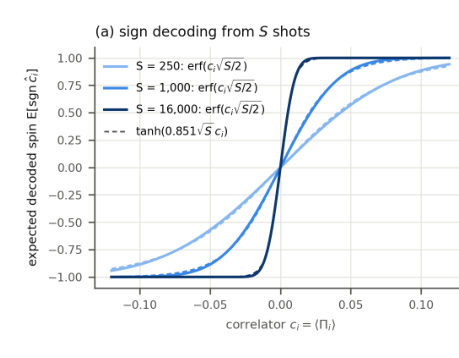
<figcaption class="paper-figure-caption"><b>Fig 4.</b> FIG. 4: (a) The expected decoded spin E[sgn ˆci] = erf(ci p</figcaption>
</figure>
<figure class="paper-figure-card">
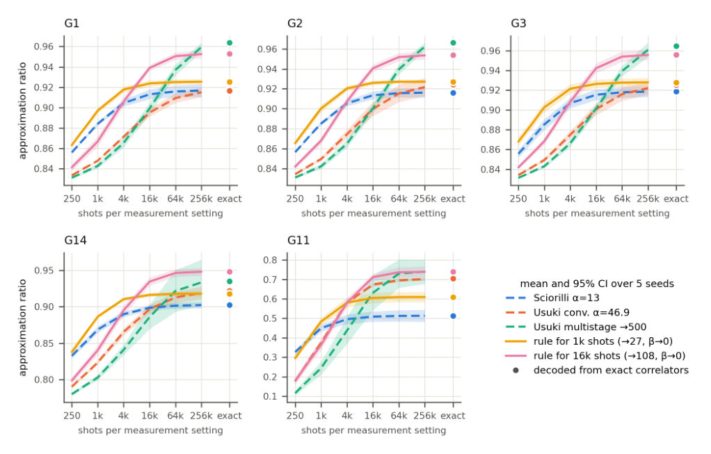
<figcaption class="paper-figure-caption"><b>Fig 5.</b> FIG. 5: Expected approximation ratio after decoding from S shots per measurement setting, for the five G-set graphs (mean and 95% confidence band over five paired initializations; native ansatz). The dots on the right are decoded from exact correlators. Dashed lines: published schedules; solid lines: the shot-aware rules for S = 103</figcaption>
</figure>
</div>

<p><strong>Summary.</strong> This work tackles the Max-Cut problem using Pauli Correlation Encoding on quantum processors. The authors introduce a crucial 'shot-aware' training schedule that correctly links the required optimization sharpness to the actual number of measurement shots available. This methodology significantly improves performance on real hardware by accurately accounting for measurement noise and finite sampling.</p>
<p><strong>Why it may be interesting.</strong> It provides a concrete, hardware-aware methodology for improving variational quantum algorithms by correctly modeling the impact of finite measurement resources (shots) and device noise on optimization schedules.</p>
<details>
<summary>Detailed structure</summary>
<p><strong>Main problem.</strong> The paper addresses the challenge of solving NP-hard combinatorial optimization problems, specifically Max-Cut, using quantum computation.</p>
<p><strong>Main result.</strong> A novel shot-aware training schedule is proposed that accounts for finite measurement budgets and device noise, leading to superior performance compared to previous methods on both simulated and physical quantum hardware.</p>
<p><strong>Method.</strong> It employs Pauli Correlation Encoding (PCE) to map binary variables to Pauli correlators, optimizing a relaxed loss function using a schedule whose sharpness is determined by the available shot budget ($S$).</p>
<p><strong>Model / system.</strong> The problem is framed as finding the ground state of a classical Ising model (Max-Cut). The implementation is tested on the IBM Heron quantum processor, utilizing hardware-native ansatz circuits.</p>
<p><strong>Key observables.</strong> Approximation ratio ($r(\mathbf{x})$), measured Pauli correlators, and the final decoded cut weight.</p>
<p><strong>Important parameters / regimes.</strong> Shot budget ($S$), sharpness parameter ($\alpha$), and device noise damping factor ($s$).</p>
<p><strong>Assumptions / limitations.</strong> The core assumption is that the required training sharpness ($\alpha$) scales predictably with the shot budget ($\alpha \propto \sqrt{S}$), correcting previous overestimations based on exact expectation values.</p>
<p><strong>Figures summary.</strong> The notes reference tables comparing approximation ratios across various schedules and shot counts, and tables detailing the damping of measured correlators on the physical device.</p>
<p><strong>Paper structure.</strong> The paper develops from the theoretical equivalence of Max-Cut to an Ising model, introduces the PCE and the relaxed loss function, derives the shot-aware scheduling principle, and concludes with extensive comparative results on both simulation and the IBM Heron hardware.</p>
</details>
<details>
<summary>Abstract</summary>
<p>Pauli correlation encoding (PCE) encodes $m$ binary variables in the signs of $k$-body Pauli correlators of $n=O(m^{1/k})$ qubits, and trains a parameterized circuit on a relaxed loss of sharpness $α$. The strongest published schedules sharpen this loss aggressively and are benchmarked with exact expectation values, whereas a quantum computer estimates correlators from a finite number of shots. We show that the sharpness is a hidden shot budget. Since the expected sign of a correlator estimated from $S$ shots, $\mathrm{erf}(c\sqrt{S/2})$, agrees with $\tanh(0.851\sqrt{S}\,c)$ to within $0.019$, the edge term of the relaxed loss at $α=0.851\sqrt{S}$ approximately equals, up to a constant, minus twice the cut expected from decoding $S$ shots. This explains why schedules tuned with exact expectation values lose their advantage at realistic budgets, and yields a shot-aware schedule whose final sharpness is set by the shot budget. On five G-set graphs with $800$ variables on $13$ qubits, this schedule outperforms every published schedule at its target budget in all $150$ paired comparisons of the decoded circuit output, owing to the sharpness at $1.6\times10^4$ shots and mostly to switching off the regularization at $10^3$; after a classical bit-swap search, it remains the best on average at $1.6\times10^4$ shots. Device noise damps the correlators by a factor $s$, which amounts to a smaller shot budget $s^2S$. On the IBM Heron processor ibm_fez, an all-to-all ansatz of the type used for the best published G-set results compiles to $835$ CZ gates and decodes to a random cut, while our $96$-CZ hardware-native circuit, trained in simulation and sharpened to $α\simeq0.65\,s\sqrt{S}$, retains up to $0.919$ of the best-known cut. For new circuits, a damping and an offset calibrated on other circuits of the same graph predicted the decoded cuts at $10^3$ shots to within $0.002$.</p>
</details>
<p><sub><a href="#top">↑ back to top</a></sub></p>

<p><a id="paper-2610.20096"></a></p>
<h3 id="unconventional-quantum-spin-mixing-of-two-spin-1-atoms-beyond-the-single-mode-approximation"><a href="http://arxiv.org/abs/2610.20096v1">Unconventional quantum spin mixing of two spin-1 atoms beyond the single-mode approximation</a></h3>
<p><strong>Authors:</strong> Yanhong Liu, Fulin Deng, Haoxue Qiao, Wenxian Zhang<br>
<strong>Type:</strong> theory · <strong>Category:</strong> quantum gases · <strong>PDF:</strong> <a href="https://arxiv.org/pdf/2610.20096v1">https://arxiv.org/pdf/2610.20096v1</a><br>
<strong>Analysis basis:</strong> full PDF text, analyzed in chunks
<strong>Topic relevance:</strong> 🔥 <code>analog quantum simulation</code> <strong>4/5</strong> · <code>Keldysh / 2PI / non-Gaussian methods</code> <strong>1/5</strong></p>
<div class="figure-strip-hint">↔ Scroll figures horizontally</div>
<div class="paper-figures-scroll">
<figure class="paper-figure-card">
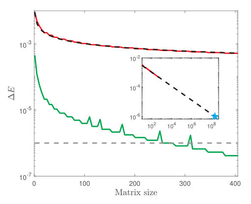
<figcaption class="paper-figure-caption"><b>Fig 1.</b> FIG. 1. Convergence of the relative error of the ground-state energy, ∆E, for two atomic bosons in a one-dimensional hard- wall trap, computed as a function of the matrix dimension in the truncated basis. The red solid line shows the relative error obtained from ED, and the black dashed line represents the corresponding fit using the fitting function axk (a ≈0.009 and k ≈−0.48). The horizontal gray dashed line represents the target accuracy of 10−6. The green solid line shows the result of the GVV method, which achieves the target accuracy at a matrix dimension of 315. The inset illustrates the extrap- olation of the fitting curve. The cyan star marks where the relative error of ED reaches...</figcaption>
</figure>
<figure class="paper-figure-card">
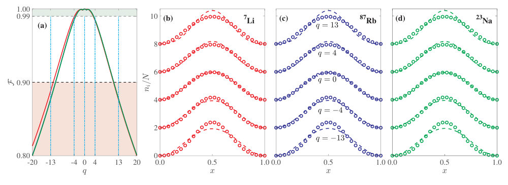
<figcaption class="paper-figure-caption"><b>Fig 2.</b> FIG. 2. (a) Fidelity F between spin component mF = 0 and mF = 1 as a function of q, for three different spin-dependent interaction strengths c2, labeled as 7Li (red), 87Rb (blue), and 23Na (green). The three curves overlap strongly and are hardly distinguishable for q &gt; 0. The shaded regions indicate three regimes defined by the fidelity: the SMA-valid regime with F ≥0.99, the crossover regime with 0.9 ≤F &lt; 0.99, and the beyond-SMA regime with F &lt; 0.9. Two horizontal gray dashed lines mark F = 0.99 and F = 0.9. The vertical cyan dashed lines are guides at q = 0, ±4, ±13. Spatial density distribution nmF of spin component mF = 0 (circles) and mF = 1 (dashed lines) for 7Li (b), 87Rb (c), and...</figcaption>
</figure>
<figure class="paper-figure-card">
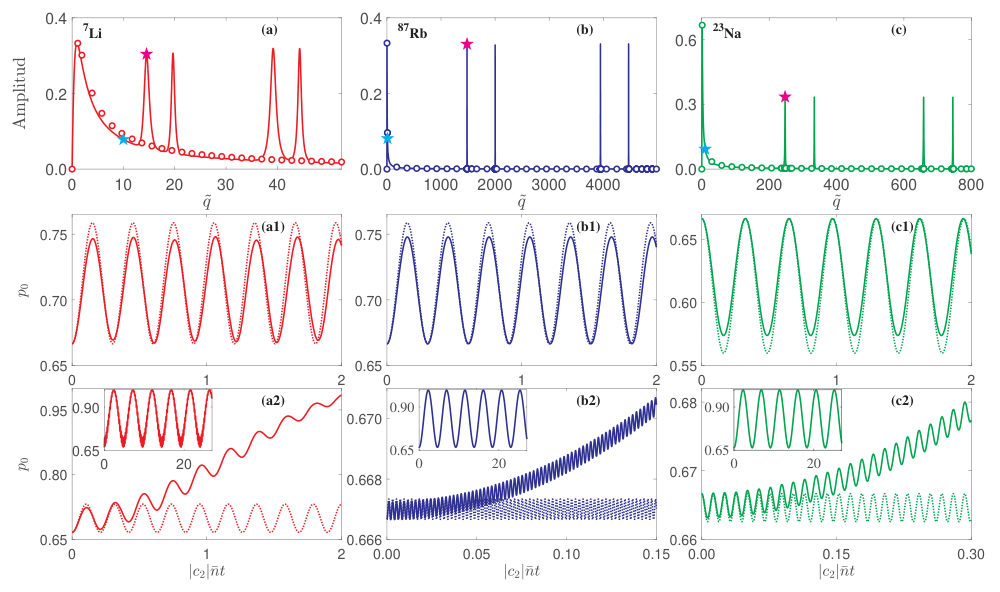
<figcaption class="paper-figure-caption"><b>Fig 3.</b> FIG. 3. Spin-mixing dynamics predicted by the GVV method and the SMA. Top row: oscillation amplitude of p0(t) as a function of ˜q for 7Li (a), 87Rb (b), and 23Na (c). Multiple peaks appear with the GVV method (solid lines) but are absent under the SMA (circles). Middle row: evolution of p0(t) at ˜q = 10 (cyan stars in (a–c)) for 7Li (a1), 87Rb (b1), and 23Na (c1). At this value of ˜q, the evolution predicted by the GVV method (solid lines) agrees well with that predicted by the SMA (dashed lines). Bottom row: p0(t) at ˜q = 14.5 for 7Li (a2), 1481.2 for 87Rb (b2), and 247.2 for 23Na (c2), corresponding to magenta stars in (a–c), respectively. At these values of ˜q, the GVV method (solid...</figcaption>
</figure>
<figure class="paper-figure-card">
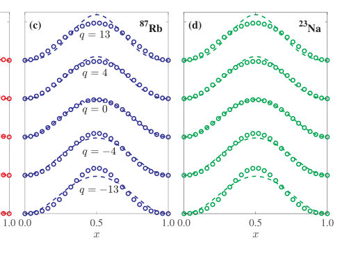
<figcaption class="paper-figure-caption"><b>Fig 4.</b> FIG. 4. Similar to Fig. 2 in the main text, except that the data are calculated by the perturbation theory.</figcaption>
</figure>
<figure class="paper-figure-card">
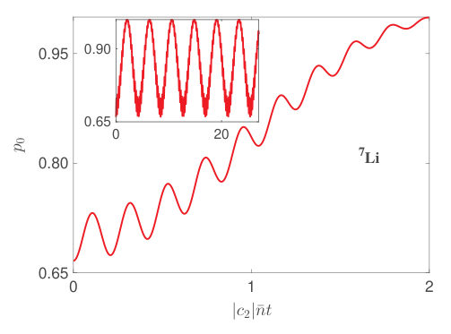
<figcaption class="paper-figure-caption"><b>Fig 5.</b> FIG. 5. Time evolution of p0(t) at a resonant quadratic Zeeman energy ˜q = ˜qr = 14.5 for 7Li atoms. The main panel shows the short-time dynamics, and the inset displays a long- time window highlighting the slow oscillation with a large amplitude. The coexistence of these two frequencies directly manifests the effective three-level structure discussed in the text.</figcaption>
</figure>
</div>

<p><strong>Summary.</strong> This paper rigorously analyzes quantum spin mixing in two spin-1 atoms beyond the Single-Mode Approximation using advanced perturbation theory. The authors demonstrate that the quadratic Zeeman energy ($q$) controls the validity of simplified models, showing that large $|q|$ causes the SMA to fail. This failure is evidenced by discrepancies in both the ground-state spatial structure and the complex, multi-timescale dynamics observed during quantum quenches.</p>
<p><strong>Why it may be interesting.</strong> This work provides a rigorous theoretical benchmark for interpreting experimental measurements in strongly interacting spinor Bose-Einstein condensates, showing precisely where mean-field or simplified approximations break down.</p>
<details>
<summary>Detailed structure</summary>
<p><strong>Main problem.</strong> The study investigates unconventional quantum spin mixing in two spin-1 atoms, specifically analyzing the breakdown of the Single-Mode Approximation (SMA) when considering higher-order spatial correlations.</p>
<p><strong>Main result.</strong> The SMA fails when the quadratic Zeeman energy ($q$) becomes large, as this energy competes with the kinetic energy, leading to observable differences in ground-state fidelity and dynamic resonances compared to SMA predictions.</p>
<p><strong>Method.</strong> The authors employ Generalized Van Vleck (GVV) perturbation theory to accurately solve the many-body Hamiltonian, comparing these results against the simpler SMA and traditional Exact Diagonalization (ED).</p>
<p><strong>Model / system.</strong> The system consists of two spin-1 bosonic atoms (e.g., $^{7}	ext{Li}, ^{87}	ext{Rb}, 	ext{ or } ^{23}	ext{Na}$) confined in a 1D hard-wall trap. The Hamiltonian includes spin-dependent interactions and Zeeman shifts ($p$ and $q$).</p>
<p><strong>Key observables.</strong> Quantum fidelity ($F$), normalized single-particle spatial density distribution ($n_{m_F}(x)$), and time evolution of population fractions ($p_{m_F}(t)$).</p>
<p><strong>Important parameters / regimes.</strong> The quadratic Zeeman energy ($q$) acts as the primary control knob, determining the validity regime of the SMA.</p>
<p><strong>Assumptions / limitations.</strong> The primary approximation is the use of GVV perturbation theory, which is highly accurate but has a finite range of validity controlled by the perturbative parameter $\eta_g$.</p>
<p><strong>Figures summary.</strong> Figures illustrate the convergence of the GVV method versus ED, show the decay of quantum fidelity $F$ as $|q|$ increases, and compare the predicted time evolution of population fractions, revealing distinct micromotion and macromotion regimes.</p>
<p><strong>Paper structure.</strong> The paper first introduces the Hamiltonian and the GVV method for accurate ground-state calculations. It then systematically analyzes the ground-state properties by tracking the quantum fidelity $F$ as a function of $q$. Finally, it examines quench spin dynamics, comparing the full GVV results against the SMA predictions to pinpoint resonance structures.</p>
</details>
<details>
<summary>Abstract</summary>
<p>The single-mode approximation (SMA) has been widely employed in ultracold spinor gases, where all spin components share the same spatial mode. By adopting generalized Van Vleck (GVV) perturbation theory, we achieve a relative error of $10^{-6}$ in the ground-state energy with a reduced effective Hilbert space dimension of $\sim 10^3$ for two spin-1 bosons confined in a one-dimensional hard-wall trap. With the accurate GVV method, we explore the validity of the SMA across ground-state properties and quench spin dynamics for two $^{7}\text{Li}$, $^{87}\text{Rb}$, or $^{23}\text{Na}$ atoms. Numerical results show that the quadratic Zeeman energy $q$ provides a powerful control knob: by increasing $|q|$, the fidelity between the spin components in the ground state gradually decreases, leading eventually to the breakdown of the SMA (due to the competition between the kinetic energy and the quadratic Zeeman energy). Quench spin dynamics with abruptly increased $q$ further reveals multiple resonances, where the SMA-predicted micromotion and beyond-SMA macromotion appear simultaneously. These results point to a direction to investigate the quantum spin-mixing dynamics beyond the SMA, particularly in recent experiments of strongly interacting spin-1 atomic gases.</p>
</details>
<p><sub><a href="#top">↑ back to top</a></sub></p>

<p><a id="paper-2610.19599"></a></p>
<h3 id="cryogenic-multiplexing-control-chip-for-superconducting-quantum-processor"><a href="http://arxiv.org/abs/2610.19599v1">Cryogenic Multiplexing Control Chip for Superconducting Quantum Processor</a></h3>
<p><strong>Authors:</strong> Rutian Huang, Xiao Geng, Xinyu Wu, Genting Dai, Liangliang Yang, Jianshe Liu, Wei Chen<br>
<strong>Type:</strong> both · <strong>Category:</strong> quantum information and computing · <strong>PDF:</strong> <a href="https://arxiv.org/pdf/2610.19599v1">https://arxiv.org/pdf/2610.19599v1</a><br>
<strong>Analysis basis:</strong> full PDF text, analyzed in chunks
<strong>Topic relevance:</strong> 🔥 <code>QC/QI experiment</code> <strong>4/5</strong></p>
<div class="figure-strip-hint">↔ Scroll figures horizontally</div>
<div class="paper-figures-scroll">
<figure class="paper-figure-card">
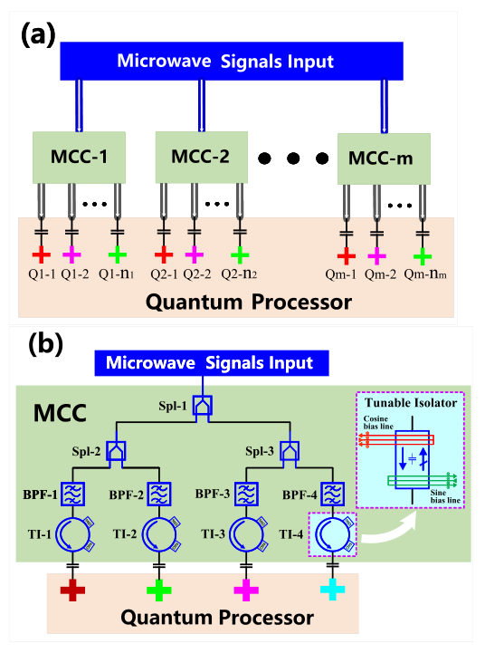
<figcaption class="paper-figure-caption"><b>Fig 1.</b> FIG. 1: Schematic of MCC circuits. (a) Setup of m MCCs in superconducting quantum computer. (b) Circuits diagram of one MCC. The inset is a schematic of a tunable isolator based on SQUIDs circuits.</figcaption>
</figure>
<figure class="paper-figure-card">
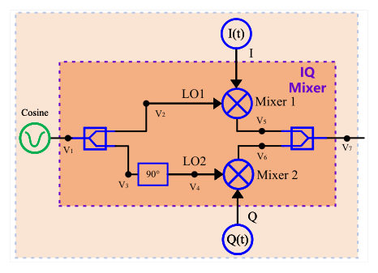
<figcaption class="paper-figure-caption"><b>Fig 2.</b> FIG. 3: Circuit diagram of IQ mixer in MCC in time domain simulation.</figcaption>
</figure>
<figure class="paper-figure-card">
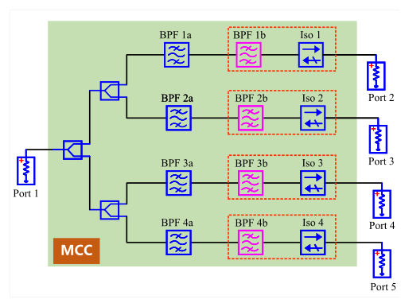
<figcaption class="paper-figure-caption"><b>Fig 3.</b> FIG. 2: Circuit diagram of MCC for frequency-domain simulation.</figcaption>
</figure>
<figure class="paper-figure-card">

<figcaption class="paper-figure-caption"><b>Fig 4.</b> FIG. 4: Circuit diagram of MCC in time domain simulation.</figcaption>
</figure>
<figure class="paper-figure-card">
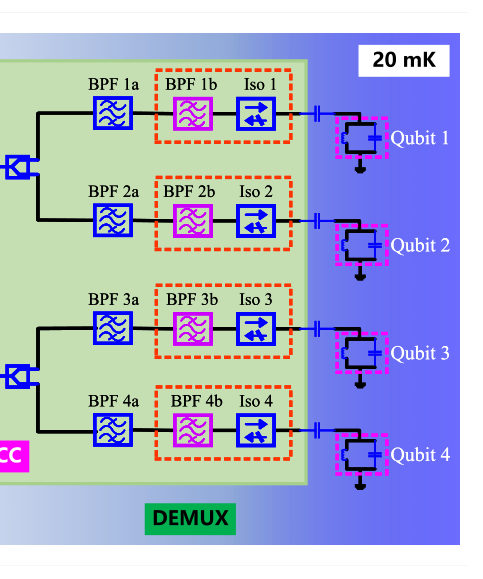
<figcaption class="paper-figure-caption"><b>Fig 5.</b> Fig. 4 shows the system-level circuit diagram of MCC in the time-domain simulation, where SSB microwave sig- nals are employed. In the left red box, a microwave source of single-tone is send to the local oscillator (LO) signal ports of four IQ Mixers via power splitters. By adjust- ing the Ii(t) and Qi(t) (i=1-4) input signals of IQ mixers, four SSB microwave signals are produced. The synthesiz- ing signals are combined into one microwave line through power splitters, thus completing the multiplexing (MUX) process. In the right box is the MCC device, which de- multiplexes (DEMUX) four signal-tones into four chan- nels for independent control of four qubits.</figcaption>
</figure>
</div>

<p><strong>Summary.</strong> This paper proposes and simulates a Cryogenic Multiplexing Control Chip (MCC) to solve the wiring bottleneck in large quantum processors. The MCC uses advanced microwave components like tunable isolators to allow a single cable to control many qubits without crosstalk. This significantly advances the feasibility of building large-scale superconducting quantum computers.</p>
<p><strong>Why it may be interesting.</strong> This work is highly relevant as it tackles a critical engineering challenge—scalability—for superconducting quantum processors, which is a major focus area in quantum information science.</p>
<details>
<summary>Detailed structure</summary>
<p><strong>Main problem.</strong> The paper addresses the interconnect bottleneck in scaling superconducting quantum processors due to the need for numerous, lossy microwave control lines.</p>
<p><strong>Main result.</strong> The proposed Cryogenic Multiplexing Control Chip (MCC) successfully enables one microwave cable to control multiple superconducting qubits while mitigating crosstalks.</p>
<p><strong>Method.</strong> The authors used both frequency-domain (S-parameter analysis) and time-domain simulations to model the MCC's signal processing capabilities.</p>
<p><strong>Model / system.</strong> The system is a Cryogenic Multiplexing Control Chip (MCC) designed to operate at 20 mK, utilizing adjustable inductors, power splitters, and non-reciprocal isolators to multiplex and demultiplex microwave control signals (4-8 GHz).</p>
<p><strong>Key observables.</strong> S-parameters ($S_{ij}$), signal waveforms (Gaussian pulses, CW), crosstalk levels, and frequency shifts.</p>
<p><strong>Important parameters / regimes.</strong> Operating temperature (20 mK), frequency range (4-8 GHz), and the required isolation degree ($I_{iso}$).</p>
<p><strong>Assumptions / limitations.</strong> The analysis assumes the MCC can be integrated on the same package as the qubits, and that specific BPF types (Chebyshev) provide optimal filtering.</p>
<p><strong>Figures summary.</strong> Figures illustrate the MCC circuit diagram, time-domain signal generation (USB/LSB), and frequency-domain comparisons showing the effectiveness of different filters and isolators in minimizing crosstalk.</p>
<p><strong>Paper structure.</strong> The paper progresses by first identifying the interconnect bottleneck, then detailing the MCC design, followed by rigorous frequency-domain modeling using S-parameters, and concluding with time-domain simulations demonstrating pulse generation and signal integrity.</p>
</details>
<details>
<summary>Abstract</summary>
<p>This paper proposes a scheme and design of cryogenic multiplexing control chip (MCC) which enables one microwave cable to control many superconducting qubits. Designed based on adjustable inductor, MCC is a non-reciprocal device which generates microwave signals between 4 and 8 GHz and constructs XY control circuit to operate qubits. The effects of filters, isolators, power splitters, qubits and load impedance on MCC are analyzed in the frequency-domain simulation. And in time-domain simulation, the response time, Gaussian pulses, single-sideband, amplitude and frequency compensation of MCC are examined. The MCC can be integrated with the superconducting qubits on the same package at 20 mK temperature stage, and output specific microwave pulses used to drive the superconducting qubits without crosstalks. The MCC can greatly reduce the number of microwave control lines and is beneficial to the development of large-scale superconducting quantum processor.</p>
</details>
<p><sub><a href="#top">↑ back to top</a></sub></p>

<p><a id="paper-2610.19736"></a></p>
<h3 id="void-free-through-glass-vias-for-multilayer-surface-electrode-ion-traps"><a href="http://arxiv.org/abs/2610.19736v1">Void-Free Through-Glass Vias for Multilayer Surface-Electrode Ion Traps</a></h3>
<p><strong>Authors:</strong> Eike Iseke, Jacob Stupp, Friederike Giebel, Nila Krishnakumar, Konstantin Thronberens, Nora D. Stahr, Md. Masum Billah, Marlon Kuhn, Christian Ospelkaus<br>
<strong>Type:</strong> experiment · <strong>Category:</strong> other · <strong>PDF:</strong> <a href="https://arxiv.org/pdf/2610.19736v1">https://arxiv.org/pdf/2610.19736v1</a><br>
<strong>Analysis basis:</strong> full PDF text, analyzed in chunks
<strong>Topic relevance:</strong> 🔥 <code>QC/QI experiment</code> <strong>4/5</strong></p>
<div class="figure-strip-hint">↔ Scroll figures horizontally</div>
<div class="paper-figures-scroll">
<figure class="paper-figure-card">
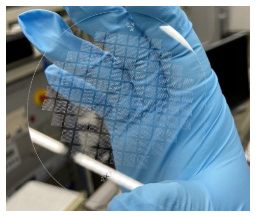
<figcaption class="paper-figure-caption"><b>Fig 1.</b> Fig. 1. 3-inch fused silica wafer after Selective Laser-Induced Etching (SLE). The wafer contains 88 chips, each comprising 220 via-holes with a diameter of 75 µm.</figcaption>
</figure>
<figure class="paper-figure-card">
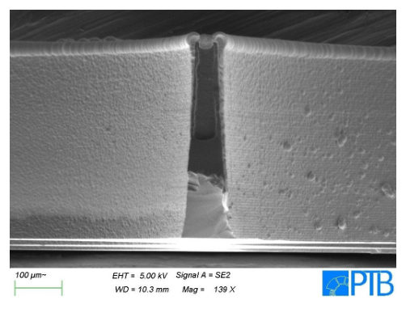
<figcaption class="paper-figure-caption"><b>Fig 2.</b> Fig. 4. Cross-sectional SEM image of two adjacent test TGVs with a diameter of 1 mm after electroplating. Gold deposition occurs along the sidewalls, while enhanced growth at the via-hole rim (top part of the picture) leads to pronounced overgrowth caused by current crowding.</figcaption>
</figure>
<figure class="paper-figure-card">
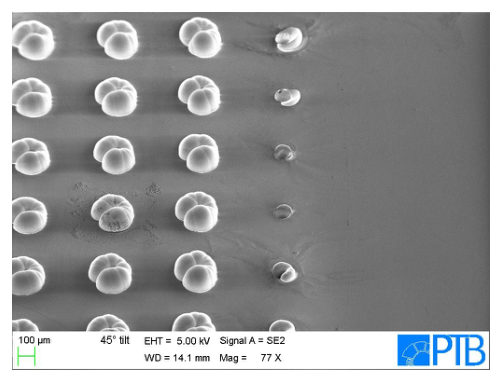
<figcaption class="paper-figure-caption"><b>Fig 3.</b> Fig. 2. SEM image of neighboring TGVs after conformal electroplating. Most TGVs exhibit pronounced overgrowth at the TGV entrance, while several remain only partially filled.</figcaption>
</figure>
<figure class="paper-figure-card">
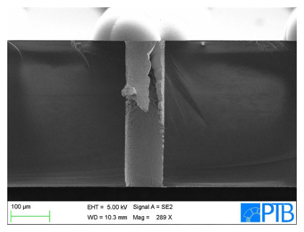
<figcaption class="paper-figure-caption"><b>Fig 4.</b> Fig. 3. Cross-sectional SEM image of a TGV after conformal electroplating. Premature closure at the via-hole entrance is observed while the lower region remains mostly unfilled, resulting in a large internal void.</figcaption>
</figure>
<figure class="paper-figure-card">
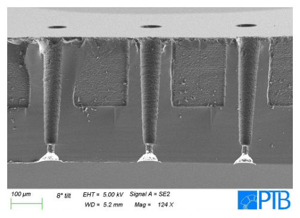
<figcaption class="paper-figure-caption"><b>Fig 5.</b> Fig. 5. Cross-sectional SEM image of three neighboring via-holes after seed layer deposition. Bright contrast in the chamfer region indicates the presence of the sputtered gold seed layer, while the upper via-hole region remains uncoated. Additional notches introduced by SLE enable controlled wafer cleaving for cross-section analysis.</figcaption>
</figure>
</div>

<p><strong>Summary.</strong> This paper reports a breakthrough in microfabrication for quantum hardware, demonstrating the creation of multilayer Surface-Electrode Ion Traps (SEITs) on fused silica. The key innovation is a void-free, high-yield method for filling Through-Glass Vias (TGVs) using a geometry-assisted electroplating technique. This enables the complex, scalable integration of ion traps with external control electronics via a dedicated interposer.</p>
<p><strong>Why it may be interesting.</strong> This work directly addresses the hardware engineering bottleneck for scaling trapped-ion quantum processors by providing a robust, high-yield interconnectivity solution (TGVs) necessary for complex, multi-electrode trap arrays.</p>
<details>
<summary>Detailed structure</summary>
<p><strong>Main problem.</strong> The primary challenge is developing a reliable, void-free interconnection technology to scale Surface-Electrode Ion Traps (SEITs) onto fused silica substrates.</p>
<p><strong>Main result.</strong> The authors successfully demonstrated the first fully integrated multilayer SEIT on fused silica incorporating void-free Through-Glass Vias (TGVs) with a high yield (&gt;98.8%).</p>
<p><strong>Method.</strong> The process involves Selective Laser-Induced Etching (SLE) to create high-aspect-ratio vias, followed by a novel geometry-assisted bottom-up electroplating technique to ensure void-free metallization.</p>
<p><strong>Model / system.</strong> The physical system is a multilayer Surface-Electrode Ion Trap (SEIT) fabricated on a fused silica substrate, which is integrated with a separate glass interposer chip using thermocompression bonding.</p>
<p><strong>Key observables.</strong> TGV-level yield (&gt;98.8%), mean TGV resistance ($\approx 6.6 	ext{ } \Omega$), and successful electrical connectivity across multiple wafers.</p>
<p><strong>Important parameters / regimes.</strong> Via dimensions include a diameter of 75 µm and a pitch of 300 µm; the substrate material is fused silica.</p>
<p><strong>Assumptions / limitations.</strong> The success relies on the geometry-assisted bottom-up plating approach to overcome current crowding and void formation inherent in high-aspect-ratio glass vias.</p>
<p><strong>Figures summary.</strong> Figures show SEM cross-sections illustrating the initial failure modes (voids, overgrowth) and the successful, uniform, void-free bottom-up filling of the TGVs. Other figures detail the final chip-to-chip bonding assembly.</p>
<p><strong>Paper structure.</strong> The paper progresses from identifying the need for scalable SEITs on fused silica, detailing the SLE and geometry-assisted electroplating process to achieve void-free TGVs, and concluding with the full integration of the trap chip and an interposer via thermocompression bonding.</p>
</details>
<details>
<summary>Abstract</summary>
<p>Through-substrate interconnects are a key technology for scaling surface-electrode ion traps (SEITs) toward large electrode counts and complex architectures. Dielectric substrates such as fused silica offer superior RF performance compared to silicon, but the reliable fabrication of void-free through-glass vias (TGVs) remains challenging. In this work, we demonstrate a SEIT fabricated on a fused silica substrate incorporating TGVs. The via-holes are formed using Selective Laser-Induced Etching and subsequently metallized with gold by electroplating. A patent-pending geometry-assisted bottom-up plating approach enables void-free filling using constant-current electroplating without electrolyte additives or pulsed deposition schemes. Electrical characterization across multiple wafers confirms a TGV-level yield above 98.8 %, demonstrating the robustness and reproducibility of the developed TGV technology. The TGVs are combined with multilayer SEIT fabrication, enabling vertical signal routing to all electrodes while maintaining an unaffected trapping surface without wire bonds. To interface the trap with external control electronics, a glass interposer providing signal fan-out to a larger pitch is designed and fabricated. The trap chip and the interposer are integrated using thermocompression bonding, forming a compact chip-to-chip assembly. The presented technology demonstrates the first fully integrated multilayer SEIT on fused silica incorporating void-free TGVs.</p>
</details>
<p><sub><a href="#top">↑ back to top</a></sub></p>

<p><a id="paper-2610.19180"></a></p>
<h3 id="cavity-assisted-dynamic-nuclear-polarisation"><a href="http://arxiv.org/abs/2610.19180v1">Cavity-assisted dynamic nuclear polarisation</a></h3>
<p><strong>Authors:</strong> Tristan Lorriaux, Yutian Wen, Patrice Bertet, Benjamin Huard, Audrey Bienfait<br>
<strong>Type:</strong> experiment · <strong>Category:</strong> other · <strong>PDF:</strong> <a href="https://arxiv.org/pdf/2610.19180v1">https://arxiv.org/pdf/2610.19180v1</a><br>
<strong>Analysis basis:</strong> full PDF text, analyzed in chunks
<strong>Topic relevance:</strong> <code>Tavis-Cummings &amp; cavity-many-emitter</code> <strong>3/5</strong> · <code>analog quantum simulation</code> <strong>3/5</strong> · <code>quantum optics experiment</code> <strong>3/5</strong> · <code>QC/QI experiment</code> <strong>2/5</strong> · <code>correlated / nonlocal dissipation</code> <strong>2/5</strong> · <code>driven-dissipative phase transition</code> <strong>2/5</strong> · <code>quantum measurements</code> <strong>2/5</strong> · <code>methods for driven-dissipative</code> <strong>1/5</strong> · <code>non-equilibrium universality</code> <strong>1/5</strong></p>
<div class="figure-strip-hint">↔ Scroll figures horizontally</div>
<div class="paper-figures-scroll">
<figure class="paper-figure-card">
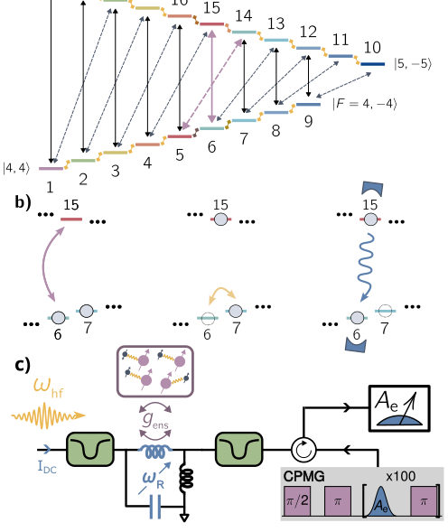
<figcaption class="paper-figure-caption"><b>Fig 1.</b> FIG. 1. Purcell-DNP principle and experimental setup a) Energy level diagram of Bi:Si donors at low magnetic field (not to scale, see main text). The two transitions addressable by the resonator at 7.4 GHz are in purple. Hyperfine transi- tions (yellow) near 0.2 GHz connect neighbouring energy lev- els inside the ground and excited manifolds. b) Single cycle of the Purcell-DNP protocol. An electronic-like swap between |6⟩and |15⟩is followed by a hyperfine swap between |7⟩and |6⟩. The resonator creates a selective radiative decay channel from |15⟩to |6⟩completing the pumping cycle. c) Experimen- tal circuit: A frequency-tunable superconducting resonator (blue) is coupled with strength gens...</figcaption>
</figure>
<figure class="paper-figure-card">
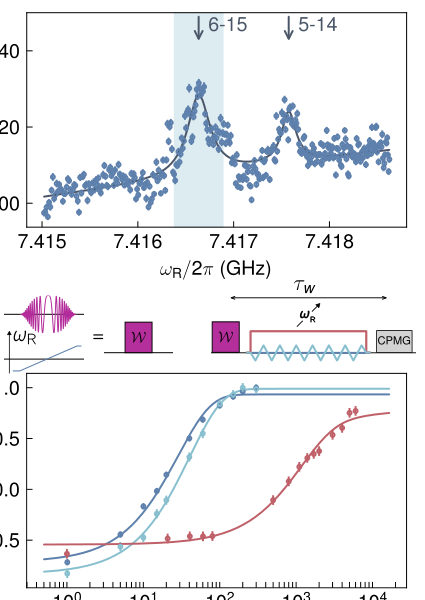
<figcaption class="paper-figure-caption"><b>Fig 2.</b> FIG. 2. Spin ensemble characterization. a) Res- onator decay rate κ as a function of its frequency. When tuned through the |6⟩↔|15⟩and |5⟩↔|14⟩transitions, the spin ensemble induces additional losses. Lorentzian fits yields the transition frequencies, linewidths, and cooperativ- ities (see main text). (b) Inversion-recovery measurement of the |6⟩↔|15⟩lifetime, using an adiabatic WURST inver- sion pulse. With the resonator on resonance, Purcell relax- ation dominates and sets T1 = 32(2) s (blue). Sweeping the resonator frequency by ±150 kHz during the relaxation step broadens the Purcell reset bandwidth, at the price of extend- ing the effective lifetime to T eff 1 = 41(1) s (cyan). With the...</figcaption>
</figure>
<figure class="paper-figure-card">
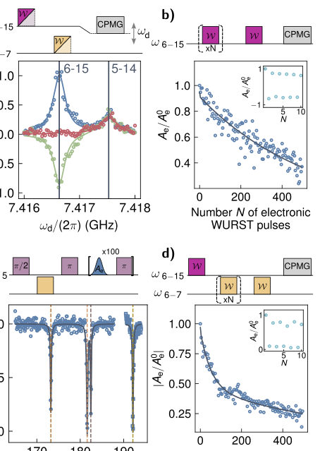
<figcaption class="paper-figure-caption"><b>Fig 3.</b> FIG. 3. Population transfer characterization. a) CPMG spectroscopy of |6⟩↔|15⟩and |5⟩↔|14⟩(blue). Applying a WURST pulse resonant with |6⟩↔|15⟩inverts that transition while leaving |5⟩↔|14⟩unchanged (green), confirming transition selectivity. Applying a nuclear WURST pulse on |6⟩↔|7⟩afterwards equilibrates the |6⟩↔|15⟩pop- ulation to zero net polarisation (red), while |5⟩↔|14⟩re- mains unaffected. Solid lines are Lorentzian fits. b) Normal- ized echo amplitude at ωd = ω6-15 after N electronic WURST pulses, N a multiple of four (circles). A fit to the data (see Ap- pendix G) yields an inversion efficiency ηe = 0.9996 ± 0.0005. Inset: consecutive values of N. c) ENDOR spectroscopy: a nuclear...</figcaption>
</figure>
<figure class="paper-figure-card">
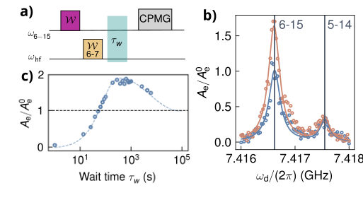
<figcaption class="paper-figure-caption"><b>Fig 4.</b> FIG. 4. Observation of radiative nuclear pump- ing. a) DNP pulse sequence for 1 cycle: one electronic and one nuclear WURST pulses followed by a Purcell recovery wait time τW realizes the scheme described in Fig. 1b. b) CPMG spectroscopy of the |6⟩↔|15⟩transition before (blue) and after (orange) one DNP cycle with τW = 300 s. Solid lines are Lorentzian fits. c) Normalized echo amplitude at ωd = ω6−15 as a function of τW . After an optimal recov- ery time τW = 280 s, the polarisation enhancement reaches 1.79(4) before decaying on a timescale set by hyperfine diffu- sion. Dashed line is a rate equation fit, see Appendix I 2.</figcaption>
</figure>
<figure class="paper-figure-card">
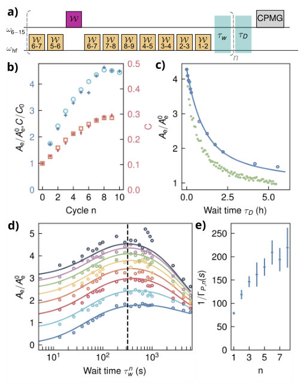
<figcaption class="paper-figure-caption"><b>Fig 5.</b> FIG. 5. Complete nuclear pumping and limitations. a) Pulse sequence for pumping the entire ground manifold population into state |6⟩: a train of WURST pulses brings iteratively the population of one ground state after another to |15⟩from which it relaxes to |6⟩after a wait time τW , see Appendix I 1. b) Efficiency after n DNP cycles, by CPMG spectroscopy (blue crosses), or by cw spectroscopy (red points, right axis is in absolute coordinates) after a wait time τ n W = 320 s. Circles and squares are from a numeri- cal model capturing the Purcell breakdown effect, see Ap- pendix J 2. c) Increasing the wait time τD after a 8-pumping scheme leads to the accumulated population in |6⟩after 8 DNP...</figcaption>
</figure>
</div>

<p><strong>Summary.</strong> This paper reports on a novel method to achieve Dynamic Nuclear Polarization (DNP) in silicon donor spins using a superconducting resonator. By leveraging the Purcell effect, the authors successfully pump nuclear spins, achieving significant polarization enhancement at extremely low temperatures. This demonstrates a powerful, controllable mechanism for enhancing quantum signals in solid-state quantum memories.</p>
<p><strong>Why it may be interesting.</strong> This work is highly relevant as it combines cavity QED principles (Purcell effect) with solid-state spin physics (donor spins) to engineer non-equilibrium quantum states, which is a core topic in AMO physics and quantum memory research.</p>
<details>
<summary>Detailed structure</summary>
<p><strong>Main problem.</strong> The paper addresses the need for Dynamic Nuclear Polarization (DNP) to enhance spin polarization in solid-state quantum systems, as thermal polarization is insufficient for sensitive measurements.</p>
<p><strong>Main result.</strong> The authors successfully demonstrated a cavity-assisted DNP mechanism, achieving a cumulative polarization enhancement factor of 4.6 over multiple cycles at millikelvin temperatures.</p>
<p><strong>Method.</strong> They implemented a multi-step protocol combining adiabatic microwave/RF pulses with Purcell-enhanced relaxation within a superconducting resonator coupled to donor spins.</p>
<p><strong>Model / system.</strong> The system is an ensemble of bismuth donor spins (I=9/2, S=1/2) in isotopically purified silicon, coupled to a superconducting resonator. The physics is governed by Zeeman, hyperfine, and Purcell-enhanced relaxation interactions.</p>
<p><strong>Key observables.</strong> Polarization enhancement factor (e.g., 1.79 per cycle, 4.6 cumulative), longitudinal relaxation time ($T_1$), and spin echo amplitude measured via CPMG sequences.</p>
<p><strong>Important parameters / regimes.</strong> Millikelvin temperatures, low cooperativity regime ($C \ll 1$), and the Purcell enhancement rate ($\Gamma_P$).</p>
<p><strong>Assumptions / limitations.</strong> The observed enhancement is limited by the competition between Purcell and intrinsic relaxation, and a collective slowing of radiative decay as nuclear polarization builds up.</p>
<p><strong>Figures summary.</strong> Figures illustrate the Purcell-DNP principle, the energy level diagram of Bi:Si donors, the multi-step pulse sequence, and the measurement of $T_1$ demonstrating Purcell dominance.</p>
<p><strong>Paper structure.</strong> The paper details the physical setup and Hamiltonian, describes the multi-step DNP protocol using adiabatic and RF pulses, presents measurements of polarization enhancement, and analyzes the limitations imposed by various relaxation channels.</p>
</details>
<details>
<summary>Abstract</summary>
<p>Dynamic nuclear polarisation transfers polarisation from electron to nuclear spins by relying on a dissipative channel. Here we introduce a cavity-based DNP mechanism which uses the radiative relaxation of the electronic spin through the Purcell effect to bring about the nuclear spin polarisation. We implement this protocol on an ensemble of bismuth donor spins (I=9/2, S=1/2) in isotopically purified silicon coupled to a superconducting resonator. A single cycle, combining adiabatic microwave and radio-frequency pulses with Purcell relaxation, increases a target ground state's population by a factor of $1.79\pm0.04$; a cumulative enhancement of $4.6\pm0.2$ is reached with additional cycles, to be compared with the theoretical limit of ninefold set by the degeneracy of the ground manifold. We explain this difference by the competition between Purcell and intrinsic relaxation on the one hand and a collective effect that slows down the electronic spin radiative decay as the nuclear spin population grows on the other hand. Our results place radiative DNP as an available mechanism at millikelvin temperatures where phonon-mediated relaxation is frozen.</p>
</details>
<p><sub><a href="#top">↑ back to top</a></sub></p>

<p><a id="paper-2610.19941"></a></p>
<h3 id="joint-measurement-advantage-and-finite-time-transitions-in-accelerated-detector-registers"><a href="http://arxiv.org/abs/2610.19941v1">Joint-measurement advantage and finite-time transitions in accelerated detector registers</a></h3>
<p><strong>Authors:</strong> Zhiming Huang<br>
<strong>Type:</strong> theory · <strong>Category:</strong> quantum information and computing · <strong>PDF:</strong> <a href="https://arxiv.org/pdf/2610.19941v1">https://arxiv.org/pdf/2610.19941v1</a><br>
<strong>Analysis basis:</strong> full PDF text, analyzed in chunks
<strong>Topic relevance:</strong> <code>correlated / nonlocal dissipation</code> <strong>3/5</strong> · <code>driven-dissipative phase transition</code> <strong>3/5</strong> · <code>quantum measurements</code> <strong>3/5</strong> · <code>methods for driven-dissipative</code> <strong>2/5</strong> · <code>non-equilibrium universality</code> <strong>2/5</strong> · <code>scars &amp; prethermalization</code> <strong>2/5</strong> · <code>Keldysh / 2PI / non-Gaussian methods</code> <strong>1/5</strong></p>
<div class="figure-strip-hint">↔ Scroll figures horizontally</div>
<div class="paper-figures-scroll">
<figure class="paper-figure-card">
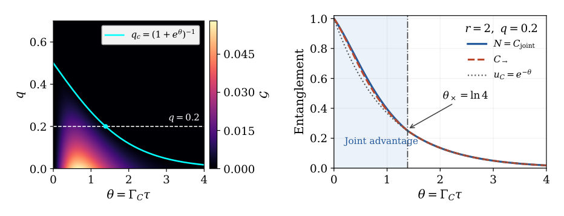
<figcaption class="paper-figure-caption"><b>Fig 1.</b> Figure 1: Operational transition for relaxation-rate ratio r = 2. The left panel shows the concurrence gap G from Eq. (52). The boundary qc = (1+eθ)−1 follows directly from Eq. (71); the gap is exactly zero above it. The right panel uses Eqs. (31) and (38). The shaded region is where all separable measurements fall below the joint optimum. At θ× = ln 4, both resource curves meet uC = e−θ at 1/4 and coincide thereafter.</figcaption>
</figure>
</div>

<p><strong>Summary.</strong> This work analyzes the quantum resource extraction capabilities from a multi-qubit state undergoing thermalization due to interaction with an environment. It quantifies the 'joint-measurement advantage' compared to single-measurement protocols. The key finding is that this advantage is conditional on the ratio of relaxation rates and vanishes at a finite time, marking a transition point in the system's quantum utility.</p>
<p><strong>Why it may be interesting.</strong> It provides concrete, quantitative conditions ($q < 1/r$) for when quantum resources are genuinely enhanced by joint measurements in open quantum systems, which is crucial for understanding quantum communication protocols near thermal equilibrium.</p>
<details>
<summary>Detailed structure</summary>
<p><strong>Main problem.</strong> The paper investigates the distinction between entanglement remaining in a quantum register after thermalization (Unruh response) and the entanglement that can be recovered through joint, distributed measurements.</p>
<p><strong>Main result.</strong> A joint measurement advantage exists only when the thermal excitation factor $q$ satisfies $q < 1/r$, and this advantage vanishes at a unique finite time $  heta_   imes$ at finite temperature.</p>
<p><strong>Method.</strong> The authors derive exact formulas for joint-assisted concurrence and one-way measurement values using techniques like polar decomposition and spectral analysis.</p>
<p><strong>Model / system.</strong> The model involves a four-qubit cluster state subjected to independent generalized amplitude damping (thermal relaxation) on two assisting nodes (C and D), while the target nodes (A and B) remain isolated.</p>
<p><strong>Key observables.</strong> Joint-assisted concurrence ($C_{	ext{joint}}$), one-way value ($C_{	o}$), and bipartition negativity ($\mathcal{N}_{A|	ext{BCD}}$).</p>
<p><strong>Important parameters / regimes.</strong> Relaxation-rate ratio ($r$), thermal excitation factor ($q$), and elapsed proper time ($    au$).</p>
<p><strong>Assumptions / limitations.</strong> The analysis is performed within the independent weak-coupling thermalization model, and the environments are assumed to be inaccessible.</p>
<p><strong>Figures summary.</strong> Figure 1 illustrates the operational transition for $r=2$, showing how the concurrence gap $G$ boundary and resource curves ($C_{	ext{joint}}$, $C_{	o}$, $u_C$) meet at the transition time $    heta_   imes$.</p>
<p><strong>Paper structure.</strong> The paper first establishes the resource comparison ($C_{	ext{joint}} = \mathcal{N}_{A|	ext{BCD}}$) and then analyzes the time evolution of the joint advantage, deriving closed-form expressions for the resource quantities based on thermal parameters.</p>
</details>
<details>
<summary>Abstract</summary>
<p>The Unruh response thermalizes accelerated detectors, but the entanglement remaining in a register does not by itself specify what distributed measurements can recover. We study this distinction for a four-qubit cluster state whose two assisting nodes independently undergo generalized amplitude damping, while the target nodes remain isolated and the environments are inaccessible. We derive the exact joint-assisted concurrence and the exact one-way value for arbitrary local measurements. The joint optimum equals the bipartition negativity, and computational-basis measurements attain the one-way optimum. A polar-decomposition argument, together with compactness, establishes a necessary and sufficient condition for separable measurements to attain the joint optimum and proves a strict gap whenever this condition fails. For assisting detectors at equal Unruh temperature with relaxation-rate ratio $r>1$, joint advantage exists precisely when the thermal excitation factor satisfies $q<1/r$. At finite positive temperature it ends at a unique finite time, while the remaining entanglement is nonzero. For $r=2$, both the transition time and remaining resource have closed expressions. These results identify when joint assistance is necessary within the independent weak-coupling thermalization model.</p>
</details>
<p><sub><a href="#top">↑ back to top</a></sub></p>

<p><a id="paper-2610.20258"></a></p>
<h3 id="gaussian-and-qubit-semigroup-dynamics-beyond-gksl"><a href="http://arxiv.org/abs/2610.20258v1">Gaussian and Qubit Semigroup Dynamics beyond GKSL</a></h3>
<p><strong>Authors:</strong> Nadine Diesel, Charlotte Bäcker, Walter T. Strunz<br>
<strong>Type:</strong> theory · <strong>Category:</strong> other · <strong>PDF:</strong> <a href="https://arxiv.org/pdf/2610.20258v1">https://arxiv.org/pdf/2610.20258v1</a><br>
<strong>Analysis basis:</strong> full PDF text, analyzed in chunks
<strong>Topic relevance:</strong> <code>correlated / nonlocal dissipation</code> <strong>3/5</strong> · <code>driven-dissipative phase transition</code> <strong>3/5</strong> · <code>methods for driven-dissipative</code> <strong>3/5</strong> · <code>Keldysh / 2PI / non-Gaussian methods</code> <strong>2/5</strong> · <code>non-equilibrium universality</code> <strong>2/5</strong> · <code>analog quantum simulation</code> <strong>1/5</strong> · <code>quantum measurements</code> <strong>1/5</strong></p>
<div class="figure-strip-hint">↔ Scroll figures horizontally</div>
<div class="paper-figures-scroll">
<figure class="paper-figure-card">
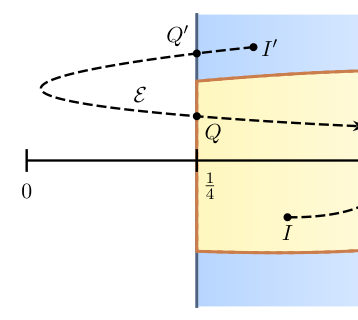
<figcaption class="paper-figure-caption"><b>Fig 1.</b> Fig. 1: Schematic depiction of the space of physically admissible quantum states and mappings between them for the asymptotic master equation in Eq. (24). Every valid quantum state with covariance matrix σ has to satisfy the uncertainty relation, requiring det σ ≥1/4. Under the evolution of a map E which features a single fixed point F, an initial condition can either remain positive for all times (example: I) or there is a time interval for which the map is not positive (example: I′). The point of the state space for the trajectory of the initial condition I′ to leave this space is indicated by Q′, it re-enters the state space at Q. Note that Q itself as an initial condition would lead to...</figcaption>
</figure>
<figure class="paper-figure-card">
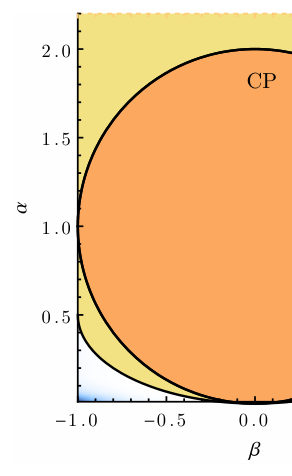
<figcaption class="paper-figure-caption"><b>Fig 2.</b> Fig. 2: The figure shows the (β, α)-parameter plane. All dynamics with the parameters (β, α) from the orange circle are completely positive dynamics. The yellow region corresponds to parameters for which the dynamics are positive. Note that the parameter plane extends to all positive α and all parameter choices with α &gt; 2 correspond to positive dynamics. The color gradient from white to blue represents the volume of the positivity domain P relative to volume of the Bloch ball for restricted positive dynamics. The parameter values marked by an open circle (◦) and an asterisk (∗) correspond to the dynamics depicted in Fig. 3 and Fig. 5, respectively.</figcaption>
</figure>
<figure class="paper-figure-card">
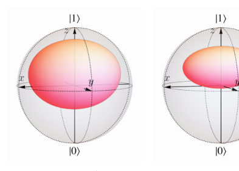
<figcaption class="paper-figure-caption"><b>Fig 3.</b> Fig. 3: The figure illustrates the image of the time-evolved Bloch ball, ΛtB at various points in time, with parameter choices α = 4</figcaption>
</figure>
<figure class="paper-figure-card">
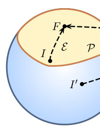
<figcaption class="paper-figure-caption"><b>Fig 4.</b> Fig. 4: Sketch of the situation of a non-positive qubit dynamics. The blue circle represents the Bloch ball and the yellow subset thereof the positivity domain P. The trajectory of I′ (and Q′) leave the Bloch ball for a while, then eventually approaches the fixed point F. All initial conditions from within the positivity domain give rise to positive dynamics.</figcaption>
</figure>
<figure class="paper-figure-card">
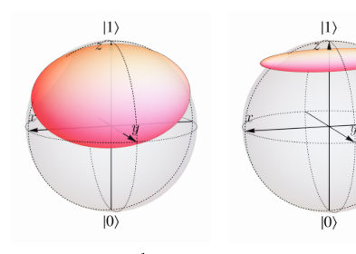
<figcaption class="paper-figure-caption"><b>Fig 5.</b> Fig. 5: Shown here is an example of a restricted positive dynamics according to the generator from Eq. (31) for the parameter values α = 1 10 and β = 9 10, marked by an asterisk (∗) in Fig. 2. The figure illustrates the image of the time-evolved Bloch ball, ΛtB, at three different times t. The y- and z-axes of the Bloch sphere contract at the same rate, while the x-axis contracts much more slowly. At the same time, the ellipsoid shifts toward the fixed point F = (0, 0, 9</figcaption>
</figure>
</div>

<p><strong>Summary.</strong> This paper explores quantum dynamics for open systems that cannot be described by the standard GKSL master equation. By analyzing Gaussian and qubit models, the authors determine that while non-GKSL generators can describe asymptotic behavior, the physical requirement of positive evolution mandates that the initial state must be restricted to a specific, admissible set. This refines our understanding of open system dynamics beyond the standard assumptions.</p>
<p><strong>Why it may be interesting.</strong> This work is highly relevant to AMO physics and open quantum systems as it pushes beyond the standard GKSL framework, providing necessary conditions for physical evolution when system-environment coupling is strong or non-Markovian effects are considered.</p>
<details>
<summary>Detailed structure</summary>
<p><strong>Main problem.</strong> The paper investigates quantum semigroup dynamics that deviate from the standard Gorini-Kossakowski-Sudarshan-Lindblad (GKSL) master equation, particularly for open quantum systems.</p>
<p><strong>Main result.</strong> It demonstrates that while the asymptotic dynamics of certain systems (like QBM) can be described by non-GKSL generators, the physical validity (positivity) of these dynamics requires restricting the initial state to a specific admissible set.</p>
<p><strong>Method.</strong> The authors analyze the complete positivity and positivity of the generator by examining the evolution of the covariance matrix for Gaussian states and by analyzing boundary conditions in parameter space.</p>
<p><strong>Model / system.</strong> The study models open quantum systems, first using single-mode Gaussian Quantum Brownian motion, and later generalizing to qubit dynamics. The evolution is governed by master equations or their associated generators.</p>
<p><strong>Key observables.</strong> Covariance matrix ($\sigma$), determinant of $\sigma$, and the boundary function $F(\alpha, eta)$ which determines positivity.</p>
<p><strong>Important parameters / regimes.</strong> Damping rate ($\gamma$), diffusion constants ($D_{ij}$), and parameters ($\alpha, eta$) defining the state space boundaries.</p>
<p><strong>Assumptions / limitations.</strong> The standard CPT framework assumes uncorrelated initial states, which the authors argue is too restrictive for strongly damped systems. The analysis often relies on restricting the initial state to ensure positive evolution.</p>
<p><strong>Figures summary.</strong> Figures illustrate the space of admissible quantum states (e.g., $\det \sigma \geq 1/4$) and map out parameter regions in the $(eta, \alpha)$-plane that delineate where the dynamics are positive versus non-positive.</p>
<p><strong>Paper structure.</strong> The paper proceeds by reviewing Gaussian QBM dynamics and the GKSL condition. It then analyzes the QBM model, showing the asymptotic generator is non-GKSL. Finally, it rigorously determines the boundaries for positive dynamics for both Gaussian and qubit systems using covariance matrix evolution and parameter space analysis.</p>
</details>
<details>
<summary>Abstract</summary>
<p>A well established approach to describe open quantum system dynamics is the celebrated Gorini-Kossakowski-Sudarshan-Lindblad (GKSL) master equation. In this article we aim to shed light on semigroup dynamics that are not of this form. Such dynamics may appear in real physical systems describing asymptotic long-time dynamics. Thus, they correspond to semigroup dynamics applicable to a restricted set of initial states only. As a way of motivating our studies, first we review known results about the single-mode Gaussian Quantum Brownian motion channel and corresponding master equations. Next we discuss a conceptually simpler family of qubit semigroup generators and identify parameter regions of completely positive, merely positive, and non-positive dynamics. We then focus on the latter case to which we will refer to as restricted-positive, as the semigroup generator may well be physically meaningful when applied to a restricted set of admissible initial states.</p>
</details>
<p><sub><a href="#top">↑ back to top</a></sub></p>

<p><a id="paper-2610.19272"></a></p>
<h3 id="quantum-reservoir-computing-for-attention-like-selective-reproduction"><a href="http://arxiv.org/abs/2610.19272v1">Quantum Reservoir Computing for Attention-like Selective Reproduction</a></h3>
<p><strong>Authors:</strong> Hadi Zadeh-Haghighi, Christoph Simon<br>
<strong>Type:</strong> theory · <strong>Category:</strong> disordered systems and neural networks · <strong>PDF:</strong> <a href="https://arxiv.org/pdf/2610.19272v1">https://arxiv.org/pdf/2610.19272v1</a><br>
<strong>Analysis basis:</strong> full PDF text, analyzed in chunks
<strong>Topic relevance:</strong> <code>analog quantum simulation</code> <strong>3/5</strong> · <code>driven-dissipative phase transition</code> <strong>3/5</strong> · <code>methods for driven-dissipative</code> <strong>3/5</strong> · <code>correlated / nonlocal dissipation</code> <strong>2/5</strong> · <code>non-equilibrium universality</code> <strong>2/5</strong> · <code>quantum measurements</code> <strong>2/5</strong></p>
<div class="figure-strip-hint">↔ Scroll figures horizontally</div>
<div class="paper-figures-scroll">
<figure class="paper-figure-card">
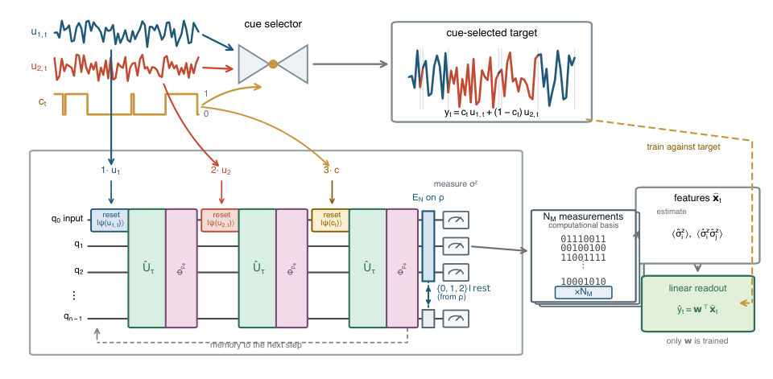
<figcaption class="paper-figure-caption"><b>Fig 1.</b> FIG. 1. Using a quantum reservoir for context-dependent selective reproduction. The two streams and the cue in Eq. (1) are sequentially encoded through reset operations on qubit q0. Each reset is followed by the propagator ˆUτ = e−i ˆ Hτ</figcaption>
</figure>
<figure class="paper-figure-card">
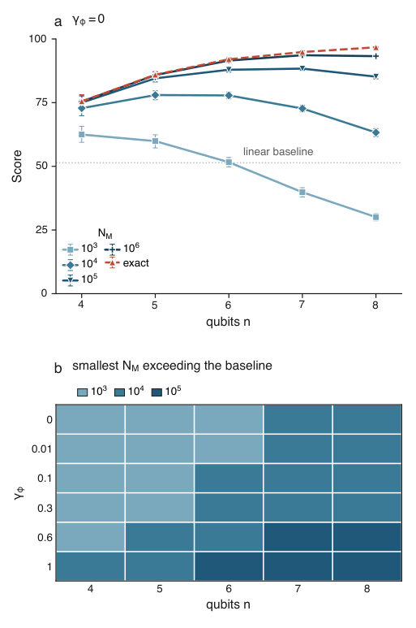
<figcaption class="paper-figure-caption"><b>Fig 2.</b> FIG. 3. Reservoir size and number of measurements jointly determine accessible performance. Ensemble means are evaluated at J⋆(n, NM), the coupling that max- imizes mean score at γφ = 0. Each random eight-qubit cou- pling matrix is reused at smaller n by keeping only the first n qubits, so the sizes share the same couplings and the same input qubit. (a) Score versus n at γφ = 0, for NM = 103–106</figcaption>
</figure>
<figure class="paper-figure-card">
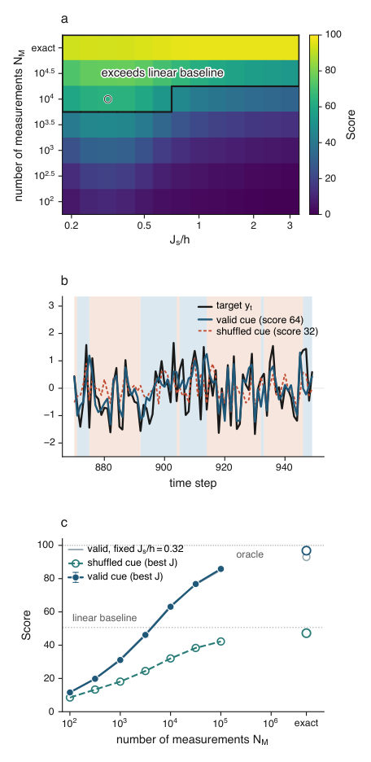
<figcaption class="paper-figure-caption"><b>Fig 3.</b> FIG. 2. Number of measurements controls selection performance (n = 8 qubits, no added noise). (a) Mean valid-cue score versus coupling Js/h and number of measure- ments NM. The top row uses exact expectation values. Cells whose mean score exceeds a linear readout of the raw in- puts (50.7) are labeled in the plot; the outline follows the edges of those cells on the measured grid. The open circle is Js/h = 0.32, NM = 104, used in (b) and (c). (b) Test traces at that point. Background: the cue selects u1 (blue) or u2 (red). (c) Score versus NM. Filled circles: at each NM, cou- pling is chosen to maximize validation score. Grey: coupling held at the circle in (a). Open circles: exact readout....</figcaption>
</figure>
<figure class="paper-figure-card">
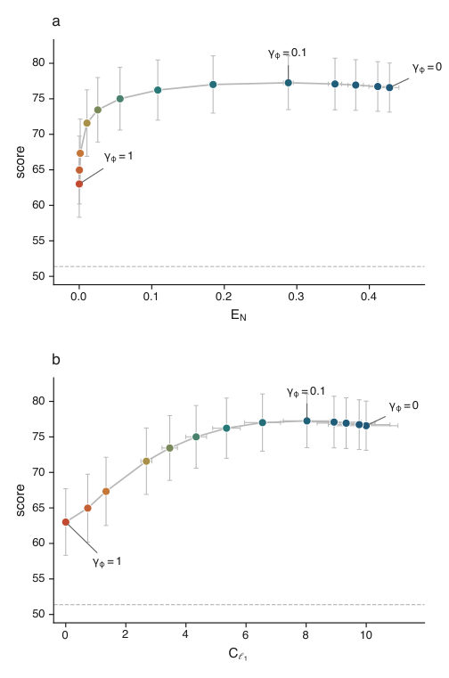
<figcaption class="paper-figure-caption"><b>Fig 4.</b> FIG. 4. Score increases with entanglement and co- herence, then saturates. Each point is the equal-weight mean over the 25 combinations of reservoir size (n = 4–8) and number of measurements (NM = 103–106 and exact read- out). Coupling is J⋆(n, NM), chosen with no added dephas- ing; the same reservoirs are then followed as dephasing in- creases. (a) Score versus logarithmic negativity EN of the predeclared input block {0, 1, 2} versus the remaining qubits (qubit 0 is the injection site; all three inputs enter through it). A two-qubit singlet has EN = 1. For this cut, EN is at most min(3, n −3) ebits, the number of qubits on the smaller side. Other three-qubit cuts on the mixed-stream at-...</figcaption>
</figure>
</div>

<p><strong>Summary.</strong> This work adapts Quantum Reservoir Computing to model context-dependent selective reproduction, mimicking cognitive attention. By using disordered spin reservoirs, the authors show that the system can accurately select and reproduce a target signal based on a binary cue. Performance is quantified by comparing the reservoir's predictive score against classical baselines and demonstrating a strong correlation with quantum resources like entanglement.</p>
<p><strong>Why it may be interesting.</strong> The study directly applies concepts from open quantum systems (dissipation, decoherence) to a machine learning paradigm (QRC), showing how quantum correlations (entanglement/coherence) are necessary resources for complex cognitive tasks.</p>
<details>
<summary>Detailed structure</summary>
<p><strong>Main problem.</strong> The paper introduces a novel task for Quantum Reservoir Computing (QRC): attention-like selective reproduction, where the system must reproduce one of two simultaneous input streams based on a binary cue.</p>
<p><strong>Main result.</strong> QRC successfully demonstrates the ability to select and reproduce the cued stream, with performance correlating positively with quantum measures like entanglement and coherence.</p>
<p><strong>Method.</strong> The task is implemented by evolving a disordered spin reservoir under a Hamiltonian and training a linear readout on $\sigma_z$ observables to predict the cued output stream.</p>
<p><strong>Model / system.</strong> The physical model is a disordered spin reservoir simulated using the transverse-field XX Ising model Hamiltonian on $n=4-8$ qubits. The dynamics involve unitary evolution followed by local dephasing channels.</p>
<p><strong>Key observables.</strong> Performance 'score' (Pearson correlation), Entanglement (logarithmic negativity, $E_N$), and coherence ($\ell_1$ measure).</p>
<p><strong>Important parameters / regimes.</strong> Reservoir size ($n$), number of measurements ($N_M$), coupling strengths ($J_{ij}, h$), and dephasing probability ($\gamma_\phi$).</p>
<p><strong>Assumptions / limitations.</strong> The analysis relies on numerical simulation using synthetic i.i.d. noise streams and assumes that state quantities can be treated as independent of the measurement number $N_M$ for certain analyses.</p>
<p><strong>Figures summary.</strong> Figures illustrate the score dependence on $N_M$ and coupling strength, showing a crossover point. Other figures map the correlation between the performance score and entanglement measures ($E_N$) across varying system sizes and dissipation levels.</p>
<p><strong>Paper structure.</strong> The paper systematically introduces the attention-like task, details the Hamiltonian and readout structure, presents results showing performance scaling with $N_M$ and quantumness, and concludes with detailed analyses correlating performance with entanglement and coherence under varying dissipation.</p>
</details>
<details>
<summary>Abstract</summary>
<p>Choosing which information to use as the context changes is a basic cognitive operation. We introduce a new task of this kind for quantum reservoir computing (QRC): a binary cue indicates which of two simultaneous input streams the reservoir must reproduce. In simulated spin reservoirs with a trained linear readout, infinitely many measurements (exact expectation values) let the reservoir reproduce the cued stream accurately. At a finite number of measurements \(N_M\), the score exceeds that of a linear readout of the raw inputs only at large \(N_M\) because of sampling noise. Performance increases with both entanglement and coherence in the computational basis, and then saturates. These results show that QRC can select and reproduce a cued stream, and they are a starting point for harder cognitive tasks.</p>
</details>
<p><sub><a href="#top">↑ back to top</a></sub></p>

<p><a id="paper-2610.19751"></a></p>
<h3 id="quantum-enhanced-search-for-galactic-dark-photons-using-cat-state-cavities"><a href="http://arxiv.org/abs/2610.19751v1">Quantum-enhanced Search for Galactic Dark Photons Using Cat-State Cavities</a></h3>
<p><strong>Authors:</strong> Aoying Wang, Yanjie Zeng, Yanyan Cai, Jing Shu, Bin Xu, Yuan Xu, Pan Zheng<br>
<strong>Type:</strong> both · <strong>Category:</strong> other · <strong>PDF:</strong> <a href="https://arxiv.org/pdf/2610.19751v1">https://arxiv.org/pdf/2610.19751v1</a><br>
<strong>Analysis basis:</strong> full PDF text, analyzed in chunks
<strong>Topic relevance:</strong> <code>quantum measurements</code> <strong>3/5</strong> · <code>quantum optics experiment</code> <strong>3/5</strong> · <code>QC/QI experiment</code> <strong>2/5</strong> · <code>Tavis-Cummings &amp; cavity-many-emitter</code> <strong>2/5</strong> · <code>analog quantum simulation</code> <strong>2/5</strong> · <code>Full counting statistics</code> <strong>1/5</strong> · <code>driven-dissipative phase transition</code> <strong>1/5</strong> · <code>methods for driven-dissipative</code> <strong>1/5</strong></p>
<div class="figure-strip-hint">↔ Scroll figures horizontally</div>
<div class="paper-figures-scroll">
<figure class="paper-figure-card">
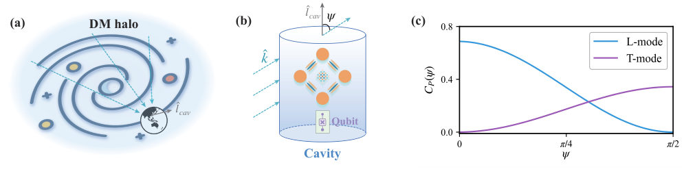
<figcaption class="paper-figure-caption"><b>Fig 1.</b> FIG. 1. (a) Schematic of an anisotropic GDPB produced by dark-matter decay or annihilation in the Milky Way halo. Earth’s rotation changes the cavity axis ˆlcav relative to the Galactic frame and produces a diurnal modulation of the line-of-sight- integrated signal. (b) cQED detector comprising a transmon qubit dispersively coupled to a high-Q niobium cavity initialized in a four-component cat state |ψ0⟩. A GDPB mode propagating along ˆk forms an angle Ψ with the cavity axis. (c) Cavity overlap CP(Ψ) for longitudinal (L, blue) and transverse (T, purple) polarizations. The longitudinal and transverse responses are largest at Ψ = 0 and Ψ = π/2, respectively.</figcaption>
</figure>
<figure class="paper-figure-card">
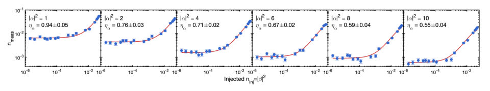
<figcaption class="paper-figure-caption"><b>Fig 2.</b> FIG. 2. Detector calibration: measured positive-event fraction nmeas versus injected photon number ninj = |β|2 for the six cat-state sizes. Solid curves are the linear fits nmeas = ηα|α|2ninj + δα used to determine the efficiency and false-positive probability.</figcaption>
</figure>
<figure class="paper-figure-card">
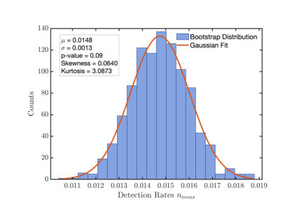
<figcaption class="paper-figure-caption"><b>Fig 3.</b> FIG. 3. Bootstrap distribution of nmeas for a representative search configuration (|α|2 = 1, τ = 4.2 ms). The blue his- togram represents 1000 bootstrap resamples; the red curve is a Gaussian fit (µ ≃0.0148, σ ≃1.3 × 10−3). The Shapiro– Wilk normality test yields p ≃0.09, indicating no statistically significant deviation from a normal distribution at 95% con- fidence.</figcaption>
</figure>
<figure class="paper-figure-card">
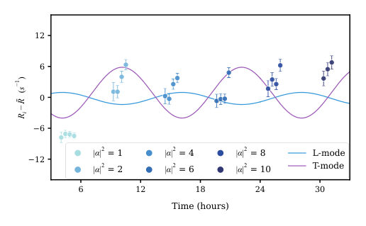
<figcaption class="paper-figure-caption"><b>Fig 4.</b> FIG. 4. False-positive-corrected excitation-rate residuals Ri−¯R as a function of laboratory time. Data points become darker with increasing |α|2. Solid curves represent the longitudinal (blue) and transverse (purple) diurnal templates evaluated at the 90% credible upper limit, ϵ2 90%Rref. t &gt; 24 h denotes September 17.</figcaption>
</figure>
<figure class="paper-figure-card">
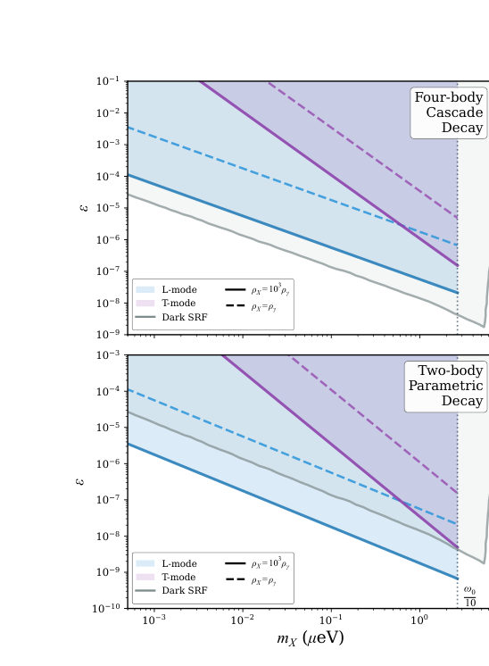
<figcaption class="paper-figure-caption"><b>Fig 5.</b> FIG. 5. 90% credible upper limits on the kinetic mixing ϵ versus dark photon mass mX. The upper and lower panels show four-body cascade decay and two-body parametric de- cay models, respectively. Solid and dashed curves correspond to local dark photon densities ρX = 103ργ and ρX = ργ. The dotted vertical line denotes mX = ωc/10, the bound for the rel- ativistic approximation. Gray shaded areas indicate existing Dark SRF limits [37].</figcaption>
</figure>
</div>

<p><strong>Summary.</strong> This paper details a quantum-enhanced experimental search for the Galactic Dark Photon Background (GDPB) using a superconducting circuit QED platform. By preparing the cavity in cat states and analyzing the expected diurnal modulation due to the anisotropic dark matter field, the authors constrain the dark photon mixing parameter $\epsilon$. The work demonstrates the utility of quantum state engineering for next-generation searches in fundamental physics.</p>
<p><strong>Why it may be interesting.</strong> This work is highly relevant as it applies advanced quantum sensing techniques (cat states, cavity QED) to search for fundamental physics signals (dark photons), providing a concrete example of how quantum information principles enhance experimental sensitivity in AMO/Quantum Optics.</p>
<details>
<summary>Detailed structure</summary>
<p><strong>Main problem.</strong> The paper aims to conduct a quantum-enhanced search for the Galactic Dark Photon Background (GDPB), a relativistic and anisotropic vector field potentially sourced by dark matter decay or annihilation in the Milky Way.</p>
<p><strong>Main result.</strong> By analyzing the diurnal modulation of the excitation rate, the authors set 90% confidence-level upper bounds on the kinetic-mixing parameter $\epsilon$ for two benchmark dark photon production mechanisms.</p>
<p><strong>Method.</strong> The analysis reinterprets existing quantum-enhanced data using superconducting circuit QED (cQED) measurements, employing a hidden Markov model to extract photon-transition probabilities.</p>
<p><strong>Model / system.</strong> The system is a high-Q niobium cavity dispersively coupled to a transmon qubit, utilizing four-component cat states for quantum enhancement. The signal interaction is governed by the coupling to the anisotropic GDPB, which introduces a polarization- and angle-dependent cavity overlap function.</p>
<p><strong>Key observables.</strong> Diurnal modulation of the excitation rate, measured positive-event fraction ($n_{	ext{meas}}$), and the normalized excitation rate ($R_i$).</p>
<p><strong>Important parameters / regimes.</strong> Kinetic-mixing parameter $\epsilon$, relativistic mass range $m_X \ll \omega_c$, and the cavity overlap function $C_P(\hat{k})$ dependent on the incidence angle $\Psi(t)$.</p>
<p><strong>Assumptions / limitations.</strong> The analysis assumes the use of the $\mathrm{TM}_{010}$ mode and relies on statistical approximations (Gaussian distribution) for background subtraction and limit setting.</p>
<p><strong>Figures summary.</strong> Figure 1 illustrates the schematic of the anisotropic GDPB, the cQED setup, and the polarization-dependent cavity overlap. Figure 5 presents the final 90% credible upper limits on $\epsilon$ versus $m_X$.</p>
<p><strong>Paper structure.</strong> The paper first introduces the physical model (GDPB signal, cQED detector) and the necessary quantum enhancement techniques using cat states. It details the methodology involving directional overlap functions and diurnal modulation analysis. Finally, it presents the statistical framework for setting upper bounds on the mixing parameter $\epsilon$ based on the absence of a signal.</p>
</details>
<details>
<summary>Abstract</summary>
<p>We present a quantum-enhanced search for the Galactic dark-photon background (GDPB), a relativistic and anisotropic vector field that can be produced by dark-matter decay or annihilation in the Milky Way halo. We reinterpret an existing quantum-enhanced dark-photon dataset obtained with a superconducting circuit QED platform originally developed for wave-like dark-photon dark-matter searches, consisting of a high-$Q$ niobium cavity in the $\mathrm{TM}_{010}$ mode dispersively coupled to a transmon qubit. By preparing four-component cat states and performing repeated quantum non-demolition parity measurements, analyzed with a hidden Markov model, we extract photon-transition probabilities for multiple cat amplitudes and integration times. The coupling to the GDPB is governed by a polarization- and angle-dependent cavity overlap function, which predicts a distinctive diurnal modulation of the excitation rate for both longitudinal and transverse polarizations. From the absence of such modulation, we set 90\% confidence-level bounds on the kinetic-mixing parameter $ε$ for two benchmark production mechanisms (parametric and cascade decay) over the relativistic mass range $m_X \ll ω_c$.</p>
</details>
<p><sub><a href="#top">↑ back to top</a></sub></p>

<p><a id="paper-2610.18994"></a></p>
<h3 id="full-continuum-ultrafast-quantum-gas-microscopy"><a href="http://arxiv.org/abs/2610.18994v1">Full-Continuum Ultrafast Quantum Gas Microscopy</a></h3>
<p><strong>Authors:</strong> Andrea Litvinov, Clemens Ulm, Eva Casotti, Gerard Solà Berga, Manfred J. Mark, Francesca Ferlaino<br>
<strong>Type:</strong> both · <strong>Category:</strong> quantum gases · <strong>PDF:</strong> <a href="https://arxiv.org/pdf/2610.18994v1">https://arxiv.org/pdf/2610.18994v1</a><br>
<strong>Analysis basis:</strong> full PDF text, analyzed in chunks
<strong>Topic relevance:</strong> <code>Full counting statistics</code> <strong>3/5</strong> · <code>analog quantum simulation</code> <strong>3/5</strong> · <code>quantum measurements</code> <strong>3/5</strong> · <code>methods for driven-dissipative</code> <strong>2/5</strong> · <code>quantum optics experiment</code> <strong>2/5</strong> · <code>Keldysh / 2PI / non-Gaussian methods</code> <strong>1/5</strong></p>
<div class="figure-strip-hint">↔ Scroll figures horizontally</div>
<div class="paper-figures-scroll">
<figure class="paper-figure-card">
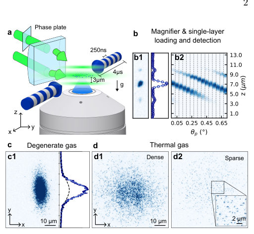
<figcaption class="paper-figure-caption"><b>Fig 1.</b> FIG. 1. In-vacuum dipolar quantum gas microscope. a Trapping and imaging protocol. Atoms are loaded in a single plane of a vertical accordion lattice with 3 µm spac- ing, whose phase is controlled by rotating a phase plate. The vertical lattice provides a band gap exceeding h×3 kHz, corre- sponding to a harmonic-oscillator length aho &lt; 150 nm, while the in-plane trap frequencies remain between 5 and 50 Hz. The atoms are illuminated with resonant counter-propagating beams alternated in 250 ns pulses, and fluorescence is col- lected by the high-NA in-vacuum objective. b Single-layer loading and magnifier. b1 Representative absorption image after quantum-gas magnification by a factor of 28.5,...</figcaption>
</figure>
<figure class="paper-figure-card">
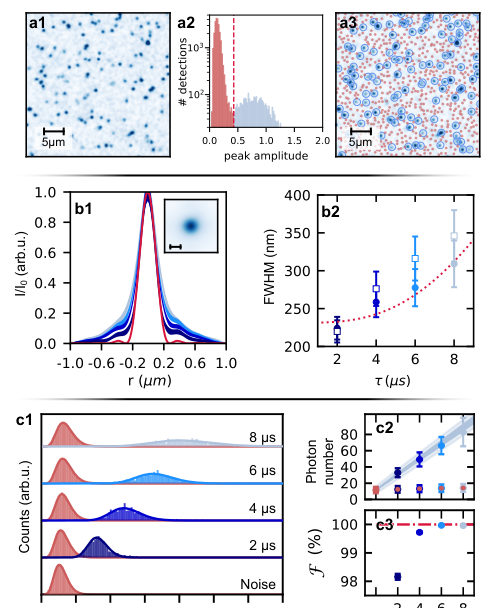
<figcaption class="paper-figure-caption"><b>Fig 2.</b> FIG. 2. Characterization of an ultrafast quantum gas microscope. a Single-atom detection and classifica- tion: a1 Fluorescence image (τ = 4 µs), after Gaussian fil- tering (σ = 245 nm) for peak finding. The mean interatomic distance is 3.9 µm. The projected pixel size is 122.7 nm. a2 Peak-amplitude distributions accounting for noise (pink) and atomic emitters (blue) compiled from over 27000 detected peaks. The dashed line marks the classification threshold. a3 Detection classification overlaid on the image in a1: noise (pink dots) and atoms (blue circles, 2 µm diameter). b Single- emitter PSF: b1 Measured PSF profile along the direction perpendicular to the imaging beams for τ = 2, 4, 6, 8...</figcaption>
</figure>
<figure class="paper-figure-card">
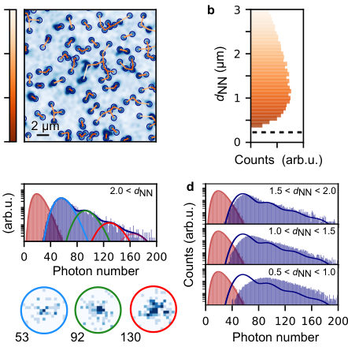
<figcaption class="paper-figure-caption"><b>Fig 3.</b> FIG. 3. Photon-counting statistics across inter-atomic distances. a Blurred fluorescence image, τ = 4 µs, with de- tected atom peaks connected by a nearest-neighbor graph (solid lines). The colormap encodes the nearest-neighbor dis- tance dNN. Here, the mean interparticle distance is 1.65 µm. b Histogram of dNN. The dashed line indicates the PSF FWHM as calibrated in Fig. 2b. c1 Photon-count histogram for noise (pink) and atoms (blue), in the isolated emitter regime where dNN &gt; 2 µm. Solid lines: fit of the histogram (see main text), accounting for multiple contributing atoms within one detected peak (blue: one atom, green: two atoms, red: three atoms, purple: four atoms). c2 Sample multi-...</figcaption>
</figure>
<figure class="paper-figure-card">
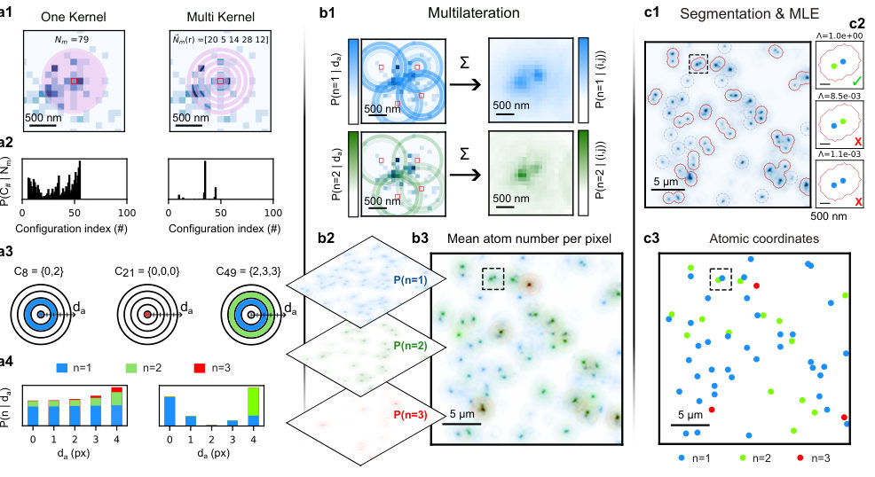
<figcaption class="paper-figure-caption"><b>Fig 4.</b> FIG. 4. Statistical deconvolution and reconstruction of the full atomic configuration. a Local radial inference. a1 The photon number Nm is measured in radially symmetric kernels K centered on a reference pixel, using either a single or multiple concentric K of different radii r. a2 Conditional probability P(C#|Nm) of the candidate radial configurations C#, obtained from a single kernel (left) and from multiple kernels (right). a3 Examples of radial configurations, specified by the atom distances d from the reference pixel. a4 Corresponding atom-number probabilities P(n|d) as a function of d. b Multilateration. b1 Radial atom-number probabilities inferred from different reference pixels are...</figcaption>
</figure>
</div>

<p><strong>Summary.</strong> This paper presents an advanced quantum gas microscopy technique that achieves atom-resolved imaging of ultracold atoms directly in continuous space, bypassing the need for confining lattices. By developing a statistical inference model, the authors can reconstruct the true atomic positions and density correlations from raw fluorescence photon counts, enabling measurements on the intrinsic length scales of quantum gases.</p>
<p><strong>Why it may be interesting.</strong> This work pushes the boundaries of quantum gas imaging by providing a robust, lattice-free method to measure intrinsic many-body correlations, which is crucial for studying continuum physics in ultracold atomic systems.</p>
<details>
<summary>Detailed structure</summary>
<p><strong>Main problem.</strong> To overcome the limitation of relying on predefined discrete spatial bases for quantum gas microscopy, the authors developed a method for ultrafast, atom-resolved imaging directly in continuous space.</p>
<p><strong>Main result.</strong> The technique successfully images atoms at sub-micrometre separations in free space, and a statistical inference model achieves a high reconstruction fidelity of 98.7% on simulated data.</p>
<p><strong>Method.</strong> The method combines ultrafast fluorescence microscopy with a statistical configuration-inference model that reconstructs atomic positions and multiplicities from raw photon count data.</p>
<p><strong>Model / system.</strong> The system utilizes an ultracold dysprosium gas imaged via fluorescence microscopy. The reconstruction relies on modeling the measured photon count probability distribution as a convolution of noise and Poissonian single-emitter contributions.</p>
<p><strong>Key observables.</strong> Single-atom classification fidelity (99.72%), effective Point-Spread Function (PSF) FWHM (254.8 nm), and total reconstruction fidelity (98.7%).</p>
<p><strong>Important parameters / regimes.</strong> Imaging time scale ($   au$) of $4\ \mu	ext{s}$, and the ability to operate beyond predefined detection lattices.</p>
<p><strong>Assumptions / limitations.</strong> The statistical inference assumes conditional independence of ring kernels when calculating the joint likelihood of the atomic configuration.</p>
<p><strong>Figures summary.</strong> Figures illustrate the in-vacuum microscope setup, single-shot fluorescence images of BECs and thermal gases, and detailed characterizations of the PSF scaling ($ au^{3/2}$) and photon-count statistics.</p>
<p><strong>Paper structure.</strong> The paper details the experimental setup for continuous-space imaging, characterizes the single-atom response and PSF, develops the statistical framework using probability distributions and characteristic functions, and finally applies this framework to reconstruct atomic configurations from measured photon counts.</p>
</details>
<details>
<summary>Abstract</summary>
<p>Quantum gas microscopy provides single-shot access to many-body configurations, but their microscopic reconstruction has so far largely relied on a predefined discrete spatial basis during fluorescence readout. Here we realize ultrafast atom-resolved fluorescence microscopy of an ultracold $^{162}$Dy gas directly in continuous space, with all external confinement removed during imaging. Exploiting the large mass and broad optical transition of dysprosium together with a high numerical aperture in-vacuum objective, we detect single atoms within $4\,μ\mathrm{s}$ while maintaining an effective point-spread function with a full width at half maximum of $254.8(3)\,\mathrm{nm}$, and an isolated single-atom classification fidelity of $99.72(3)\%$. We use the measured single-atom response to construct a statistical configuration-inference model that recovers atomic positions and multiplicities, coming from overlapping atoms, directly from single fluorescence snapshots. Benchmarking our model on Monte-Carlo generated images shows a total reconstruction fidelity of $98.7\%$. Our approach extends quantum gas microscopy beyond predefined detection lattices, enabling atom-resolved measurements of counting statistics and higher-order spatial correlations directly on the intrinsic length scales of continuum many-body systems.</p>
</details>
<p><sub><a href="#top">↑ back to top</a></sub></p>

<p><a id="paper-2610.18983"></a></p>
<h3 id="instability-of-markov-chains-under-infinitesimal-coherent-dissipation"><a href="http://arxiv.org/abs/2610.18983v1">Instability of Markov chains under infinitesimal coherent dissipation</a></h3>
<p><strong>Authors:</strong> Amir-Reza Negari, Yijian Zou, Timothy H. Hsieh<br>
<strong>Type:</strong> theory · <strong>Category:</strong> statistical mechanics · <strong>PDF:</strong> <a href="https://arxiv.org/pdf/2610.18983v1">https://arxiv.org/pdf/2610.18983v1</a><br>
<strong>Analysis basis:</strong> full PDF text, analyzed in chunks
<strong>Topic relevance:</strong> <code>driven-dissipative phase transition</code> <strong>3/5</strong> · <code>methods for driven-dissipative</code> <strong>3/5</strong> · <code>Keldysh / 2PI / non-Gaussian methods</code> <strong>2/5</strong> · <code>non-equilibrium universality</code> <strong>2/5</strong> · <code>analog quantum simulation</code> <strong>1/5</strong> · <code>correlated / nonlocal dissipation</code> <strong>1/5</strong> · <code>quantum measurements</code> <strong>1/5</strong> · <code>scars &amp; prethermalization</code> <strong>1/5</strong></p>
<div class="figure-strip-hint">↔ Scroll figures horizontally</div>
<div class="paper-figures-scroll">
<figure class="paper-figure-card">
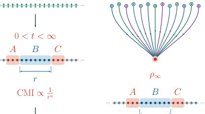
<figcaption class="paper-figure-caption"><b>Fig 1.</b> FIG. 1. Infinite Markov length under local dissipa- tion. (a) We construct a local Lindbladian acting on a prod- uct state of spins which produces algebraically decaying CMI for all intermediate states at any finite t &gt; 0. (b) We construct a local Lindbladian which rapidly relaxes to a stationary state ρ∞with algebraically decaying CMI.</figcaption>
</figure>
<figure class="paper-figure-card">
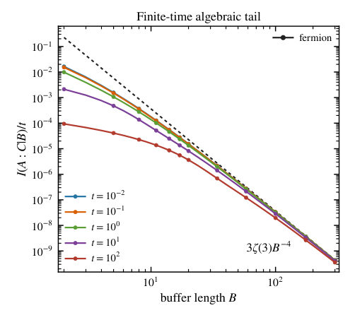
<figcaption class="paper-figure-caption"><b>Fig 2.</b> FIG. 2. CMI with single-site end regions for the fermionic Gaussian evolution at various times. The dashed line is 3ζ(3)B−4. At large buffers, the data are consistent with the asymptotic form in Eq. (3).</figcaption>
</figure>
</div>

<p><strong>Summary.</strong> This theoretical paper examines how local dissipation affects the Markov length of quantum systems, using CMI as the primary diagnostic tool. The authors demonstrate that even when dynamics are rapidly relaxing, the system can maintain infinite Markov length. This suggests that the concept of finite Markov length is fragile and easily destroyed by weak local noise.</p>
<p><strong>Why it may be interesting.</strong> This work directly addresses the stability of quantum correlations (Markov length) under realistic, dissipative environments, which is crucial for understanding quantum computation and thermalization in many-body systems.</p>
<details>
<summary>Detailed structure</summary>
<p><strong>Main problem.</strong> The paper investigates the stability of finite Markov length in quantum systems undergoing weak, local dissipative perturbations.</p>
<p><strong>Main result.</strong> The authors show that infinite Markov length can be generated by arbitrarily short, strictly local Lindbladians, implying that finite Markov length is not robust against weak local dissipation.</p>
<p><strong>Method.</strong> The analysis heavily relies on calculating the Conditional Mutual Information (CMI) for both free-fermion and constructed spin systems.</p>
<p><strong>Model / system.</strong> The models include free fermion chains evolving under local Lindbladian dissipation, which is mapped to a strictly local spin Lindbladian using auxiliary fermions.</p>
<p><strong>Key observables.</strong> Conditional Mutual Information (CMI), Markov Length, and the decay rate of CMI.</p>
<p><strong>Important parameters / regimes.</strong> Dissipation strength (Lindbladian parameters $p$), buffer width ($B$), and time ($t$).</p>
<p><strong>Assumptions / limitations.</strong> The initial analysis uses the free-fermion structure for tractability; the spin construction requires introducing auxiliary fermions to maintain locality.</p>
<p><strong>Figures summary.</strong> Figures illustrate the algebraic decay of CMI for intermediate states at finite time, and the surface code diagnostics show how logical distance and matching probability evolve with code distance and time.</p>
<p><strong>Paper structure.</strong> The paper progresses from analyzing free-fermion CMI decay to constructing an equivalent spin Lindbladian. It then analyzes the steady-state CMI decay and concludes by discussing the instability of local reversibility under weak dissipation.</p>
</details>
<details>
<summary>Abstract</summary>
<p>Under local Lindbladian evolution, the growth of conditional mutual information and its associated Markov length scale is not limited by Lieb-Robinson bounds, yet it has been unclear how quickly the Markov length can increase. We show that an arbitrarily short, strictly local Lindbladian can generate infinite Markov length from a product state. We also construct strictly local Lindbladians that converge rapidly to steady states with algebraically decaying conditional mutual information. Despite their long-range conditional correlations, the states we construct are local reversibly connected to a product state by sublinear depth circuits. Thus infinite Markov length does not imply slow relaxation nor obstruct phase stability when suitably defined.</p>
</details>
<p><sub><a href="#top">↑ back to top</a></sub></p>

<p><a id="paper-2610.20016"></a></p>
<h3 id="metric-changing-quasi-hermitian-quenches-normalized-loschmidt-amplitude-and-complex-time-zeros"><a href="http://arxiv.org/abs/2610.20016v1">Metric-Changing Quasi-Hermitian Quenches: Normalized Loschmidt Amplitude and Complex-Time Zeros</a></h3>
<p><strong>Authors:</strong> Xu-Yang Hou, Jia-Chen Tang, Hao Guo<br>
<strong>Type:</strong> theory · <strong>Category:</strong> statistical mechanics · <strong>PDF:</strong> <a href="https://arxiv.org/pdf/2610.20016v1">https://arxiv.org/pdf/2610.20016v1</a><br>
<strong>Analysis basis:</strong> full PDF text, analyzed in chunks
<strong>Topic relevance:</strong> <code>non-equilibrium universality</code> <strong>3/5</strong> · <code>Keldysh / 2PI / non-Gaussian methods</code> <strong>2/5</strong> · <code>correlated / nonlocal dissipation</code> <strong>2/5</strong> · <code>driven-dissipative phase transition</code> <strong>2/5</strong> · <code>methods for driven-dissipative</code> <strong>2/5</strong> · <code>analog quantum simulation</code> <strong>1/5</strong> · <code>quantum measurements</code> <strong>1/5</strong></p>
<div class="figure-strip-hint">↔ Scroll figures horizontally</div>
<div class="paper-figures-scroll">
<figure class="paper-figure-card">
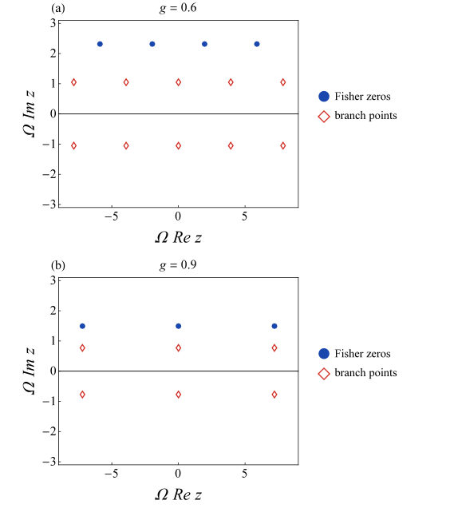
<figcaption class="paper-figure-caption"><b>Fig 1.</b> FIG. 1. Complex-time Fisher zeros and normalization branch points for the finite-temperature quench gi = 0 →gf = g at βΩ= 1. (a) g = 0.6 and (b) g = 0.9. Blue solid circles denote Fisher zeros, and red open diamonds denote normalization branch points.</figcaption>
</figure>
<figure class="paper-figure-card">
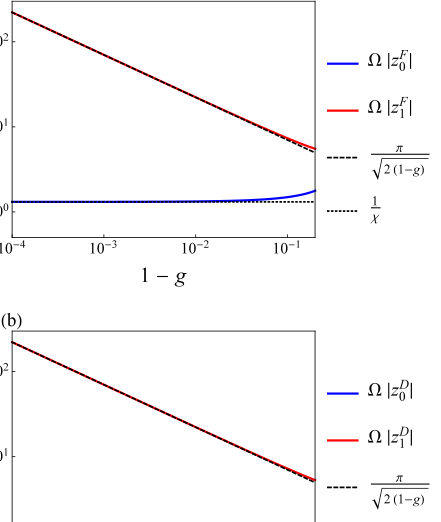
<figcaption class="paper-figure-caption"><b>Fig 2.</b> FIG. 2. Exceptional-point scaling of the complex-time zeros at βΩ= 1 as functions of 1−g. (a) Fisher-zero branches Ω|zF 0 | and Ω|zF 1 |. (b) Normalization-zero branches Ω|zD 0 | and Ω|zD 1 |. Black dashed curves show π/ p</figcaption>
</figure>
<figure class="paper-figure-card">
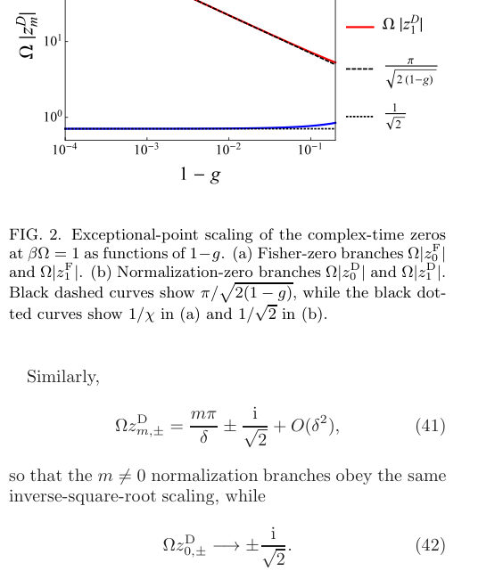
<figcaption class="paper-figure-caption"><b>Fig 3.</b> Figure 2 compares the central and noncentral zero branches. In panel (a), Ω|zF 1 | ∝(1 −g)−1/2, whereas Ω|zF 0 | →1/χ. Panel (b) shows the analogous behavior for the normalization zeros: the m = 1 branch has the same inverse-square-root scaling, while Ω|zD 0 | →1/ √</figcaption>
</figure>
<figure class="paper-figure-card">
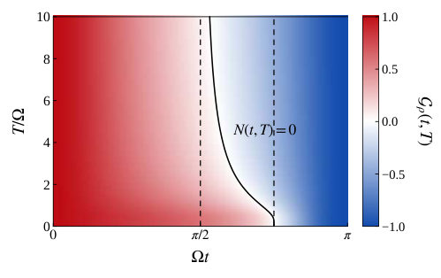
<figcaption class="paper-figure-caption"><b>Fig 4.</b> FIG. 3. Normalized mixed-state Loschmidt amplitude in the time–temperature plane for γ = 1. The solid black curve is the Fisher-zero line, while the dotted and dashed lines denote the infinite- and zero-temperature limits, respectively.</figcaption>
</figure>
<figure class="paper-figure-card">
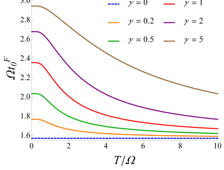
<figcaption class="paper-figure-caption"><b>Fig 5.</b> FIG. 4. Temperature dependence of the first real-time critical time tF 0 for kB = 1. Different curves correspond to different values of the non-Hermiticity parameter γ. The low- and high-temperature limits are ΩtF 0 = π/2 + arctan γ and ΩtF 0 = π/2, respectively.</figcaption>
</figure>
</div>

<p><strong>Summary.</strong> This paper investigates quantum quenches where the initial and final physical metrics differ, leading to a fundamental 'metric mismatch.' The authors introduce a normalized Loschmidt amplitude that captures this mismatch, showing that the resulting dynamics exhibit genuine non-Hermitian features in complex time. This framework is crucial for accurately comparing quantum states across different physical measurement bases.</p>
<p><strong>Why it may be interesting.</strong> This work provides a rigorous framework for quantifying non-Hermitian effects in open or non-unitary quantum dynamics, which is highly relevant for understanding realistic quench dynamics in AMO and open quantum systems.</p>
<details>
<summary>Detailed structure</summary>
<p><strong>Main problem.</strong> The paper analyzes the dynamics of quantum systems undergoing quenches where the initial and final Hamiltonians possess different metrics, leading to non-quasi-unitary evolution.</p>
<p><strong>Main result.</strong> The metric mismatch generates genuine non-Hermitian dynamics, characterized by a time-dependent normalization factor and complex-time branch singularities distinct from standard Fisher zeros.</p>
<p><strong>Method.</strong> The authors derive a normalized mixed-state Loschmidt amplitude using metric-compatible purifications and analyze its zeros in complex time.</p>
<p><strong>Model / system.</strong> The study focuses on quasi-Hermitian mixed-state quenches, initially modeled using a two-level system for explicit calculations.</p>
<p><strong>Key observables.</strong> Normalized Loschmidt Amplitude, Normalization Factor, Fisher Zeros, and Normalization Zeros.</p>
<p><strong>Important parameters / regimes.</strong> Temperature ($eta$), non-Hermiticity ($\gamma$), and the quench parameter ($\lambda_f$).</p>
<p><strong>Assumptions / limitations.</strong> The analysis requires fixing a common reference physical space via a set of observables, and the derivation of closed forms relies on the two-level system approximation.</p>
<p><strong>Figures summary.</strong> Figures illustrate the shift in Fisher-zero lines in the time-temperature plane, showing how the critical times depend on the non-Hermiticity parameter $\gamma$.</p>
<p><strong>Paper structure.</strong> The paper establishes the problem of metric mismatch, derives the normalized Loschmidt amplitude, analyzes the distinct roles of Fisher zeros (from the overlap) and normalization zeros (from the metric mismatch), and concludes by showing that the mismatch effects cannot be removed by simple transformations.</p>
</details>
<details>
<summary>Abstract</summary>
<p>In quasi-Hermitian mixed-state quenches, the initial and final Hamiltonians generally possess different positive-definite metrics, so post-quench evolution is not quasi-unitary in the initial physical space. Choosing the preparation/measurement space as reference, we derive from first principles a normalized mixed-state Loschmidt amplitude using metric-compatible purifications. The resulting biorthogonal trace representation contains a normalization factor given by the norm of the evolved purification in the initial metric; this factor is essential for comparing states from different physical Hilbert spaces and directly encodes the metric mismatch. We prove that this normalization function is strictly positive on the real-time axis, so real-time criticality arises solely from destructive interference in the dynamical overlap. In complex time, zeros of the normalization factor generate branch singularities distinct from Fisher zeros. For a general two-level system, we derive analytic expressions for the Fisher and normalization zeros and analyze exceptional-point scaling together with the temperature- and quasi-Hermiticity-dependent DQPT critical times in two solvable quench protocols. In contrast to metric-stationary quenches, where non-Hermitian effects may be absorbed into an equivalent Hermitian description, the metric mismatch here produces genuine non-Hermitian dynamics: a time-dependent normalization factor and complex-time branch structure that cannot be removed by any global similarity transformation.</p>
</details>
<p><sub><a href="#top">↑ back to top</a></sub></p>

<p><a id="paper-2610.20040"></a></p>
<h3 id="advances-in-quantum-optomechanical-control-based-on-cavity-cold-atom-systems"><a href="http://arxiv.org/abs/2610.20040v1">Advances in quantum optomechanical control based on cavity cold-atom systems</a></h3>
<p><strong>Authors:</strong> Baijun Li, Tianxiang Lu, Jie Wang, Hui Jing<br>
<strong>Type:</strong> both · <strong>Category:</strong> other · <strong>PDF:</strong> <a href="https://arxiv.org/pdf/2610.20040v1">https://arxiv.org/pdf/2610.20040v1</a><br>
<strong>Analysis basis:</strong> full PDF text, analyzed in chunks
<strong>Topic relevance:</strong> <code>Tavis-Cummings &amp; cavity-many-emitter</code> <strong>3/5</strong> · <code>analog quantum simulation</code> <strong>3/5</strong> · <code>quantum optics experiment</code> <strong>3/5</strong> · <code>quantum measurements</code> <strong>2/5</strong> · <code>driven-dissipative phase transition</code> <strong>1/5</strong></p>
<div class="figure-strip-hint">↔ Scroll figures horizontally</div>
<div class="paper-figures-scroll">
<figure class="paper-figure-card">

<figcaption class="paper-figure-caption"><b>Fig 1.</b> Fig. 1 A typical schematic diagram of cavity optomechanical system (Fabry-Pérot (FP)</figcaption>
</figure>
<figure class="paper-figure-card">

<figcaption class="paper-figure-caption"><b>Fig 2.</b> Fig. 2 Key experiments for realizing cavity optomechanical system (COMs) using cavity ultracold atom. (a) 87Rb ultracold atoms ensemble is confined in a FP cavity. The center-of-mass</figcaption>
</figure>
<figure class="paper-figure-card">

<figcaption class="paper-figure-caption"><b>Fig 3.</b> Fig. 3 Top-down optomechanical systems: dark modes, nonreciprocity, and ultralow-</figcaption>
</figure>
<figure class="paper-figure-card">

<figcaption class="paper-figure-caption"><b>Fig 4.</b> Fig. 4 Rotation quantum sensing and quantum memory based on cavity ring BEC optomechanical system. (a) An atomic BEC confined in a toroidal trap located at the center of</figcaption>
</figure>
<figure class="paper-figure-card">

<figcaption class="paper-figure-caption"><b>Fig 5.</b> Fig. 5 Schrödinger cat states and photon blockade in a cavity optomechanical system based on</figcaption>
</figure>
</div>

<p><strong>Summary.</strong> This review surveys the field of quantum optomechanics using cavity cold-atom systems. It highlights that these systems are superior platforms due to their low noise and tunable interactions, allowing for the study of strong nonlinear quantum effects. The paper details the theoretical framework and experimental progress across sensing, memory, and fundamental quantum physics.</p>
<p><strong>Why it may be interesting.</strong> This work is highly relevant as it bridges quantum optics, cavity QED, and atomic physics, providing a roadmap for realizing complex quantum nonlinear dynamics in a controllable, low-noise environment.</p>
<details>
<summary>Detailed structure</summary>
<p><strong>Main problem.</strong> The paper reviews the progress in controlling and manipulating quantum optomechanical interactions, specifically utilizing cavity cold-atom systems as the physical platform.</p>
<p><strong>Main result.</strong> It demonstrates that cavity cold-atom systems offer an ideal, low-noise platform for exploring strong and nonlinear optomechanical coupling, enabling applications in quantum sensing and memory.</p>
<p><strong>Method.</strong> The review synthesizes theoretical models, Hamiltonian formulations, and experimental results from various studies.</p>
<p><strong>Model / system.</strong> The core system is cavity optomechanics, realized using cold atomic ensembles or Bose-Einstein Condensates (BECs) coupled to optical microcavities. The interaction is governed by radiation pressure, leading to tunable coupling strengths.</p>
<p><strong>Key observables.</strong> Quantum ground state behavior, photon blockade, collective motion modes, and nonclassical states (squeezed/entangled).</p>
<p><strong>Important parameters / regimes.</strong> Coupling strength (tunable from weak to ultra-strong), cavity detuning, and atomic scattering parameters.</p>
<p><strong>Assumptions / limitations.</strong> The analysis often relies on linearization approximations to simplify the inherently nonlinear dynamics.</p>
<p><strong>Figures summary.</strong> Figures illustrate schematic diagrams of optomechanical systems and show diagnostics like the second-order correlation function as a function of detuning.</p>
<p><strong>Paper structure.</strong> The paper first outlines fundamental principles, then details the experimental realization of linear/nonlinear couplings in cold atoms, followed by dedicated sections on applications (sensing, memory), and concluding with future outlooks and challenges.</p>
</details>
<details>
<summary>Abstract</summary>
<p>Cavity optomechanics represents a frontier research direction in quantum science and technology, centered on the control and exploration of interactions between electromagnetic fields and mechanical motion. Rooted in quantum mechanics, this field realizes efficient coupling and precise manipulation of optical fields and mechanical vibrations through the structural design and precise regulation of optical microcavities and mechanical oscillators, thereby revealing and harnessing novel quantum phenomena. In recent years, cavity optomechanics has evolved into an interdisciplinary frontier integrating quantum optics, condensed matter physics, and quantum precision measurement, exhibiting profound application in both fundamental physics research and quantum information science. With advancements in technologies such as nanomanufacturing and laser cooling, optomechanical interactions have been successfully demonstrated in various experimental systems. Among these platforms, cavity cold-atom systems stand out as one of the ideal platforms for implementing quantum optomechanics. Featuring exceptional environmental isolation, long quantum coherence times, and strong light-matter interaction, these systems provide a crucial testbed for exploring strong and even ultrastrong optomechanical coupling effects as well as rich nonlinear quantum phenomena. This paper reviews the recent progress in optomechanical control and manipulation based on cavity cold-atom systems. We first outline the fundamental principles of standard cavity optomechanical systems. Then, we describe the experimental realization of linear and nonlinear optomechanical couplings in cold-atom systems. After that, we focus on the representative applications of this platform in high-precision quantum sensing, quantum memory, and the preparation of macroscopic nonclassical states. Finally, we give an outlook and challenges in this field.</p>
</details>
<p><sub><a href="#top">↑ back to top</a></sub></p>

<p><a id="paper-2610.19904"></a></p>
<h3 id="single-and-coupled-quantum-van-der-pol-oscillators-wigner-function-dynamics-exact-qutrit-solutions-and-synchronization"><a href="http://arxiv.org/abs/2610.19904v1">Single and coupled quantum van der Pol oscillators: Wigner-function dynamics, exact qutrit solutions, and synchronization</a></h3>
<p><strong>Authors:</strong> Rohitashwa Chattopadhyay, Vinayak Pendse, Shamik Gupta<br>
<strong>Type:</strong> theory · <strong>Category:</strong> statistical mechanics · <strong>PDF:</strong> <a href="https://arxiv.org/pdf/2610.19904v1">https://arxiv.org/pdf/2610.19904v1</a><br>
<strong>Analysis basis:</strong> full PDF text, analyzed in chunks
<strong>Topic relevance:</strong> <code>driven-dissipative phase transition</code> <strong>3/5</strong> · <code>methods for driven-dissipative</code> <strong>3/5</strong> · <code>Keldysh / 2PI / non-Gaussian methods</code> <strong>2/5</strong> · <code>non-equilibrium universality</code> <strong>2/5</strong> · <code>correlated / nonlocal dissipation</code> <strong>1/5</strong> · <code>quantum measurements</code> <strong>1/5</strong></p>
<div class="figure-strip-hint">↔ Scroll figures horizontally</div>
<div class="paper-figures-scroll">
<figure class="paper-figure-card">

<figcaption class="paper-figure-caption"><b>Fig 1.</b> FIG. 1: Corresponding to the dynamics (2), the figure shows the time development of the Wigner function Wxp(x, p) starting from a coherent state |α⟩, with α = 1.0, and plotted in terms of the real phase-space variables (x, p), defined via α = (x + ip)/ √</figcaption>
</figure>
<figure class="paper-figure-card">

<figcaption class="paper-figure-caption"><b>Fig 2.</b> FIG. 2: Comparison of the stationary-state Wigner function obtained numerically by solving the master equation (2) and from the stochastic description (23). All parameter values satisfy γ1 ≥2γ2, so that a valid stochastic description exists, see text.</figcaption>
</figure>
<figure class="paper-figure-card">

<figcaption class="paper-figure-caption"><b>Fig 3.</b> FIG. 3: Stationary-state radial distribution P(r), obtained numerically by solving the master equation (2) and from the stochastic model (23), with γ1 = 2.0, and γ2 = 1.0 (top), γ1 = 1.0, and γ2 = 0.5 (middle), and γ1 = 0.8, and γ2 = 0.4 (bottom). All parameter values satisfy γ1 ≥2γ2, so that a valid stochastic description exists, see text.</figcaption>
</figure>
<figure class="paper-figure-card">

<figcaption class="paper-figure-caption"><b>Fig 4.</b> FIG. 4: Stationary-state Wigner function Wxp(x, p) of the single oscillator (2) in the qutrit subspace, for γ1 = 4.0, γ2 = 1.0. The left figure is based on our analytical result, Eq. (56), while the middle one is based on numerical results obtained using QuTip. The figure on the right shows a comparison of the radial probability distribution obtained using the two methods, where R = p</figcaption>
</figure>
<figure class="paper-figure-card">

<figcaption class="paper-figure-caption"><b>Fig 5.</b> FIG. 5: Stationary-state synchronization order parameter S in the (∆−V )-plane, for the two coupled oscillator system, Eq. (57), based on numerical results obtained using QuTip. In each case, the two oscillator frequencies are taken to be ω1,2 = ω0 ± ∆/2. The parameter values are as follows. First row: γ1 = 1.0, γ2 = 20.0, with ω0 = 10.0 (left panel) and ω0 = 1.0 (right panel); Second row: γ1 = 1.0, ω0 = 1.0 and γ2 = 5.0 (left panel) and γ2 = 20.0 (right panel). For the second row, the x operator for the oscillators is taken to be frequency independent, that is, equal to (1/ √</figcaption>
</figure>
</div>

<p><strong>Summary.</strong> This paper analyzes the quantum dynamics of van der Pol oscillators, first by deriving semiclassical approximations for the Wigner function, and then by studying the synchronization of two coupled units. It employs advanced techniques like symmetry reduction and solving linear systems to characterize synchronization, revealing rich non-trivial behavior in the quantum regime.</p>
<p><strong>Why it may be interesting.</strong> This work bridges quantum optics (dissipative dynamics) with non-equilibrium statistical mechanics (synchronization), providing powerful tools (Wigner function, symmetry reduction) to analyze complex open quantum systems.</p>
<details>
<summary>Detailed structure</summary>
<p><strong>Main problem.</strong> The paper investigates the quantum dynamics and synchronization properties of coupled quantum van der Pol oscillators.</p>
<p><strong>Main result.</strong> The analysis successfully derives semiclassical approximations for the Wigner function and characterizes synchronization using a reduced, parity-invariant linear system, revealing complex phase-reversal structures.</p>
<p><strong>Method.</strong> The study employs the Lindblad master equation, deriving Wigner-function evolution equations, utilizing Fokker-Planck/Itô stochastic approximations, and solving reduced linear eigenvalue problems based on symmetry constraints.</p>
<p><strong>Model / system.</strong> The model is the quantum van der Pol oscillator, described by a Lindblad master equation incorporating single-photon pumping and nonlinear two-photon dissipation. The analysis extends to two coupled, non-identical oscillators.</p>
<p><strong>Key observables.</strong> Quantum limit cycle, stationary-state order parameter, Wigner function features (nonclassicality), and synchronization strength $|S|$.</p>
<p><strong>Important parameters / regimes.</strong> Dissipation rates ($\gamma_1, \gamma_2$), frequency mismatch ($\Delta$), and coupling strength ($V$). Regimes include semiclassical limits and large/small dissipation limits.</p>
<p><strong>Assumptions / limitations.</strong> The analysis relies on approximating the full quantum dynamics with stochastic/Fokker-Planck descriptions in the semiclassical limit, and reducing the Hilbert space to a qutrit subspace using parity symmetry for tractability.</p>
<p><strong>Figures summary.</strong> Figures illustrate the time evolution of the Wigner function and plot the synchronization strength $|S|$ and phase $\arg(S)$ in parameter planes for different dissipation regimes.</p>
<p><strong>Paper structure.</strong> The paper first analyzes the single oscillator dynamics (Wigner function, Fokker-Planck, qutrit solution) and then extends the methodology to study the synchronization of two coupled oscillators, culminating in the solution of a reduced linear system.</p>
</details>
<details>
<summary>Abstract</summary>
<p>We study quantum van der Pol oscillator in which single-photon pumping competes with a nonlinear two-photon dissipative channel to produce a quantum limit cycle, and the question of how two such oscillators with non-identical intrinsic frequencies synchronize in the sense of phase locking when coupled dissipatively to one another. For a single oscillator, starting from a Lindblad description of the dynamics, we derive the exact Wigner-function evolution equation, and show that its Fokker--Planck approximation admits in the appropriate regime an equivalent classical Itô stochastic description that reproduces remarkably well the full Lindblad dynamics. Notably, the stochastic approach provides an efficient means of capturing system dynamics in the semiclassical regime, where a large number of energy eigenstates contribute and direct numerical simulations become computationally demanding. Restricting to the three lowest Fock states and using a parity symmetry, we obtain in closed form the stationary-state density matrix and its Wigner-function representation that displays pronounced nonclassical features. For two non-identical oscillators, we study the full Lindblad dynamics numerically and characterize synchronization through the stationary-state order parameter as a function of frequency mismatch and dissipative coupling. We find that increasing the effective nonlinear dissipative strength suppresses the synchronized region. Restricting the two oscillators to the three-level qutrit subspace, a parity symmetry reduces the stationary-state problem to an exact $41$-dimensional linear system, allowing to compute the synchronization order parameter. In this reduced description, results in the limit of large dissipation agree closely with those from the full dynamics, while exhibiting in the limit of small dissipation a double-peak synchronization structure accompanied by a phase reversal.</p>
</details>
<p><sub><a href="#top">↑ back to top</a></sub></p>

<p><a id="paper-2610.19504"></a></p>
<h3 id="a-compact-six-beam-3d-magneto-optical-trap-based-on-multifunctional-metasurface-chips"><a href="http://arxiv.org/abs/2610.19504v1">A compact six-beam 3D magneto-optical trap based on multifunctional metasurface chips</a></h3>
<p><strong>Authors:</strong> Chen Qing, Huijie Sun, Yize Liu, Yuxuan Liao, Yongzhuo Li, Dengke Zhang, Xue Feng, Yidong Huang<br>
<strong>Type:</strong> experiment · <strong>Category:</strong> other · <strong>PDF:</strong> <a href="https://arxiv.org/pdf/2610.19504v1">https://arxiv.org/pdf/2610.19504v1</a><br>
<strong>Analysis basis:</strong> full PDF text, analyzed in chunks
<strong>Topic relevance:</strong> <code>QC/QI experiment</code> <strong>3/5</strong> · <code>quantum optics experiment</code> <strong>3/5</strong> · <code>analog quantum simulation</code> <strong>2/5</strong> · <code>interference shaping light</code> <strong>2/5</strong> · <code>quantum measurements</code> <strong>1/5</strong></p>
<div class="figure-strip-hint">↔ Scroll figures horizontally</div>
<div class="paper-figures-scroll">
<figure class="paper-figure-card">

<figcaption class="paper-figure-caption"><b>Fig 1.</b> Figure 1 A Schematic of the cooling laser beams in a six-beam 3D-MOT. B Layout of the core assembly of compact six-beam 3D-MOT system. The system comprises two fiberized micro-lens arrays (FMLAs), two metasurface chips (MS chips), six compact mirrors, a regular hexagonal-prism vacuum cell, and anti-Helmholtz coils. Light from each FMLA illuminates its corresponding metasurface chip, which simultaneously performs polarization conversion, beam deflection, and beam expansion. The six resulting beams are reflected by the mirrors and converge at the cell center, forming three counter-propagating beam pairs in a rotationally symmetric configuration. The anti- Helmholtz coils, aligned along one...</figcaption>
</figure>
<figure class="paper-figure-card">

<figcaption class="paper-figure-caption"><b>Fig 2.</b> Figure 1 A Schematic of multifunctional optical manipulation by the metasurface chip. Upon normal incidence of linearly polarized light, the output beams are deflected by 60° relative to the surface plane and distributed at 120° intervals in the output plane. The three beams are converted from linear polarization to LCP, LCP, and RCP, respectively, and each is expanded to an MFD of 5 mm after 70 mm of propagation. B Characterization of the metasurface chip. From left to right: optical image of the chip, local SEM image, and schematic of the rectangular meta-atom. The chip is 10 mm × 10 mm , and each metasurface region is 200 μm × 200 μm . The meta-atom geometry is defined by its periods...</figcaption>
</figure>
<figure class="paper-figure-card">

<figcaption class="paper-figure-caption"><b>Fig 3.</b> Figure3 Performance of cold atoms trapped in a compact 3D-MOT. A Schematic of the complete</figcaption>
</figure>
</div>

<p><strong>Summary.</strong> The paper presents a breakthrough in miniaturizing the six-beam 3D Magneto-Optical Trap (MOT) by integrating all necessary beam manipulation optics onto multifunctional metasurface chips. This photonic-integrated module achieves high performance, trapping and cooling $  ext{}^{87}  ext{Rb}$ atoms to $183 \mu	ext{K}$ in a compact, fiber-coupled package. This development paves a practical route toward portable quantum sensing and computing platforms.</p>
<p><strong>Why it may be interesting.</strong> This work is highly relevant as it pushes the boundaries of quantum optics by replacing bulky free-space optics with integrated photonic components, enabling portable and stable quantum measurement tools.</p>
<details>
<summary>Detailed structure</summary>
<p><strong>Main problem.</strong> The primary challenge addressed is developing a compact and stable implementation of the six-beam 3D Magneto-Optical Trap (MOT) to overcome the bulkiness of conventional free-space optics.</p>
<p><strong>Main result.</strong> The authors successfully demonstrated a compact, fiber-coupled 3D-MOT using metasurface chips, achieving trapping and cooling of $ ext{}^{87}  ext{Rb}$ atoms to a temperature of $\sim 183 \mu	ext{K}$.</p>
<p><strong>Method.</strong> The system integrates beam manipulation functions—including polarization conversion, beam deflection, and beam expansion—onto multifunctional metasurface chips fabricated using $\alpha$-Si on $    ext{SiO}_2$.</p>
<p><strong>Model / system.</strong> The physical platform is a Photonic-Integrated Cell Module (PICM) containing two metasurface chips within a hexagonal-prism vacuum cell. The MOT utilizes a quadrupole magnetic field generated by anti-Helmholtz coils.</p>
<p><strong>Key observables.</strong> Trapped atom number ($>10^6$ atoms), temperature ($\sim 183 \mu	ext{K}$), polarization states (RCP/LCP), and beam deflection/expansion characteristics.</p>
<p><strong>Important parameters / regimes.</strong> Metasurface geometry (e.g., $\alpha$-Si meta-atoms on $  ext{SiO}_2$), MOT volume ($73 	imes 73 	imes 10^7 	ext{ mm}^3$), and magnetic field gradient ($\sim 15 	ext{ G/cm}$).</p>
<p><strong>Assumptions / limitations.</strong> The system relies on the high refractive-index contrast between $\alpha$-Si and $ ext{SiO}_2$ for efficient lightwave manipulation, and the approach is claimed to be compatible with high-volume production.</p>
<p><strong>Figures summary.</strong> Figures illustrate the schematic of the six-beam 3D-MOT, the layout of the core assembly, and details of the metasurface chip unit, showing the integration of optical functions.</p>
<p><strong>Paper structure.</strong> The paper details the necessity for miniaturization, presents the metasurface design (using inverse design and FDTD simulations), describes the fabrication process (EBL/ICP-RIE), and concludes with the experimental demonstration of the MOT performance.</p>
</details>
<details>
<summary>Abstract</summary>
<p>Magneto-optical traps (MOTs), indispensable to cold-atom-based quantum computing and quantum precision measurement, are increasingly desired in compact and stable form. Particularly, the six-beam 3D-MOT, distinguished by symmetric geometry and superior trapping performance, finds particularly broad applications. Conventional implementations, however, rely on complex and bulky free-space optics, hindering miniaturization, practical assembly, and long-term stability. Here, we demonstrate a compact six-beam 3D-MOT system that employs two multifunctional optical metasurface chips to implement the optical-field functionalities required for cooling and trapping atoms. By combining two metasurface chips and a vacuum cell, a photonic-integrated cell module (PICM) is implemented as the core assembly and the volume is only" 73<em>73</em>107 mm^3" . In success, 1.3 * 10^3 Rb atoms are trapped and cooled to the temperature of ~183 μK. It should be noticed that the laser beam is guided to the metasurface through optical fiber, thus such fully fiber-coupled architecture enables straightforward and stable operations. We believe that this work would pave a practical route toward compact and portable 3D-MOT.</p>
</details>
<p><sub><a href="#top">↑ back to top</a></sub></p>

<p><a id="paper-2610.19779"></a></p>
<h3 id="tomography-for-coherent-noise"><a href="http://arxiv.org/abs/2610.19779v1">Tomography for coherent noise</a></h3>
<p><strong>Authors:</strong> Long Huang<br>
<strong>Type:</strong> theory · <strong>Category:</strong> quantum information and computing · <strong>PDF:</strong> <a href="https://arxiv.org/pdf/2610.19779v1">https://arxiv.org/pdf/2610.19779v1</a><br>
<strong>Analysis basis:</strong> full PDF text, analyzed in chunks
<strong>Topic relevance:</strong> <code>QC/QI experiment</code> <strong>3/5</strong> · <code>methods for driven-dissipative</code> <strong>2/5</strong> · <code>quantum measurements</code> <strong>2/5</strong> · <code>correlated / nonlocal dissipation</code> <strong>1/5</strong></p>
<div class="figure-strip-hint">↔ Scroll figures horizontally</div>
<div class="paper-figures-scroll">
<figure class="paper-figure-card">

<figcaption class="paper-figure-caption"><b>Fig 1.</b> FIG. 1. (a) Encoding circuits for the bit-flip error. (b) Encoding circuits for the phase-flip error. (c) Encoding circuits for the bit- phase-flip error with the code in Eq. (1). (d) Encoding circuits for the bit-phase-flip error with the code in Eq. (2).</figcaption>
</figure>
</div>

<p><strong>Summary.</strong> This paper addresses the challenge of coherent noise in quantum error correction, which is harder to correct than simple random errors. The authors propose a systematic, multi-stage protocol to accurately determine the parameters of this coherent noise. This method significantly reduces the experimental complexity while providing a powerful tool for improving the accuracy of syndrome-based decoding.</p>
<p><strong>Why it may be interesting.</strong> This work provides a concrete, scalable methodology for characterizing complex noise sources in quantum hardware, which is crucial for advancing fault-tolerant quantum computation.</p>
<details>
<summary>Detailed structure</summary>
<p><strong>Main problem.</strong> Coherent noise poses a greater challenge to quantum error correction than independent stochastic Pauli errors because unitary errors preserve interference and accumulate over multiple QEC rounds.</p>
<p><strong>Main result.</strong> The authors introduce a protocol to accurately determine the model and parameters of coherent noise, significantly improving syndrome-based decoding by injecting correlated priors into the decoding graph.</p>
<p><strong>Method.</strong> The protocol involves a multi-step, hierarchical process of comparing experimental process matrices ($\chi'$) obtained from applying various levels of QEC schemes against simulated datasets ($\chi$) based on a hypothesized noise model.</p>
<p><strong>Model / system.</strong> The study focuses on characterizing coherent noise in multi-qubit devices, utilizing simple three-qubit codes (bit-flip and phase-flip codes) for encoding and testing the noise model.</p>
<p><strong>Key observables.</strong> Experimental process matrices ($\chi'$) compared to simulated process matrices ($\chi$) derived from the noise model.</p>
<p><strong>Important parameters / regimes.</strong> The complexity reduction from $16^n$ to $O(16)$ is a key parameter improvement; the accuracy depends on the technical conditions.</p>
<p><strong>Assumptions / limitations.</strong> The protocol assumes that the noise can be modeled and characterized by comparing experimental measurements to simulations based on the noise model.</p>
<p><strong>Figures summary.</strong> Figure 1 illustrates the encoding circuits for bit-flip, phase-flip, and bit-phase-flip errors using the two sample three-qubit codes.</p>
<p><strong>Paper structure.</strong> The paper proposes a multi-step protocol: (i) Tomography on a single qubit; (ii) Applying one-level QEC schemes; (iii) Applying two-level QEC schemes; and (iv) Applying three-level QEC schemes, progressively refining the noise model ($\epsilon_0 	o \epsilon_3$).</p>
</details>
<details>
<summary>Abstract</summary>
<p>Coherent noise poses a fundamentally greater challenge to quantum error correction than independent s- tochastic Pauli errors, because unitary errors preserve interference between error paths, can accumulate over multiple quantum error correction rounds, and leave the encoded logical channel with a residual coherent com- ponent. If the parameters of such coherent noise can be accurately determined, this knowledge can be exploited to inject correlated priors into the decoding graph, and to perform maximum-likelihood decoding under poly- nomially tractable structures, significantly improving the accuracy of syndrome-based decoding. In this work, we introduce one protocol to determine the model and parameters of coherent noise, and reduce the complexity of the experiment from 16nto O(16), which is of great significance for correcting coherent noise in quantum error correction.</p>
</details>
<p><sub><a href="#top">↑ back to top</a></sub></p>

<p><a id="paper-2610.20361"></a></p>
<h3 id="modeling-electrodeposition-of-thin-films-with-compact-dendritic-and-random-morphologies"><a href="http://arxiv.org/abs/2610.20361v1">Modeling electrodeposition of thin films with compact, dendritic, and random morphologies</a></h3>
<p><strong>Authors:</strong> Fábio D. A. Aarão Reis, Dung di Caprio, Sidiney G. Alves, Ismael S. S. Carrasco<br>
<strong>Type:</strong> theory · <strong>Category:</strong> statistical mechanics · <strong>PDF:</strong> <a href="https://arxiv.org/pdf/2610.20361v1">https://arxiv.org/pdf/2610.20361v1</a><br>
<strong>Analysis basis:</strong> full PDF text, analyzed in chunks
<strong>Topic relevance:</strong> <code>non-equilibrium universality</code> <strong>3/5</strong> · <code>Frenkel-Kontorova</code> <strong>1/5</strong> · <code>Keldysh / 2PI / non-Gaussian methods</code> <strong>1/5</strong> · <code>driven-dissipative phase transition</code> <strong>1/5</strong> · <code>methods for driven-dissipative</code> <strong>1/5</strong></p>
<div class="figure-strip-hint">↔ Scroll figures horizontally</div>
<div class="paper-figures-scroll">
<figure class="paper-figure-card">

<figcaption class="paper-figure-caption"><b>Fig 1.</b> Fig. 1 Deposition of an adatom on a given configuration of the previously formed deposit (dark gray) and of the electrode (light gray): (a) Random walk of a cation (dark red sphere) in the electrolyte. (b)-(d) First three hops of the mobile adatom formed by the cation reaction, with possible hop directions indicated by arrows [black arrows indicate the executed hops in (b) and (c)].</figcaption>
</figure>
<figure class="paper-figure-card">

<figcaption class="paper-figure-caption"><b>Fig 2.</b> Fig. 4(b) shows dendrite growth with the same model param- eters but with an electrode with (111) orientation51. The elec- trode crystallography does not affect the dendrite shape, except possibly at very short times, but this orientation is coupled with the cation flux in the [−1,−1,−1] direction in the simulation cell. The dendrites now grow with a leaf-like shape: the trunks prop- agate in [001], [010], and [100] directions; at some heights of the trunks, there appear only two secondary branches; a limita- tion in the number of tertiary branches is also observed. This</figcaption>
</figure>
<figure class="paper-figure-card">

<figcaption class="paper-figure-caption"><b>Fig 3.</b> Fig. 2 Deposits obtained in simulations on SC lattices with: (a) G = 20 and P = 0.05; (b) G = 5 × 104 and P = 0.25; (c), (d), (e): G = 2 × 103 and P = 0.05 with different viewpoints. Adapted with permission from Ref. 41. Copyright 2018 American Chemical Society.</figcaption>
</figure>
<figure class="paper-figure-card">

<figcaption class="paper-figure-caption"><b>Fig 4.</b> Fig. 3 Snapshots of the initial growth with G = 104, P = 0.1, and a small faceted nanoparticle in the origin, at the dimensionless simulation times (a) t = 800 and (b) t = 1790. Reproduced with permission from Ref. 42. Copyright 2022 American Chemical Society.</figcaption>
</figure>
<figure class="paper-figure-card">

<figcaption class="paper-figure-caption"><b>Fig 5.</b> Fig. 4 Deposits obtained in simulations on FCC lattices with G = 5 × 104 and P = 0.1 with different viewpoints: (a) (001) substrate (cation flux in [0,0,−1] direction). Adapted with permission from Ref. 42. Copyright 2022 American Chemical Society. (b) (111) substrate (cation flux in [−1,−1,−1] direction). Adapted with permission from Ref. 51 (CC-BY 4.0 licence).</figcaption>
</figure>
</div>

<p><strong>Summary.</strong> This paper presents a detailed computer simulation study of metal electrodeposition, modeling how the resulting thin film morphology changes from compact to dendritic. By incorporating adatom diffusion into a lattice model, the authors successfully predict the characteristic, ordered branching patterns of dendrites, providing a quantitative framework for understanding crystal growth instabilities.</p>
<p><strong>Why it may be interesting.</strong> While focused on materials science, the underlying physics—the competition between diffusive flux, surface relaxation, and kinetic limitations—is a classic non-equilibrium statistical mechanics problem relevant to pattern formation and interface dynamics.</p>
<details>
<summary>Detailed structure</summary>
<p><strong>Main problem.</strong> The paper models the complex electrodeposition process of thin metal films, which can exhibit distinct morphologies: compact, fractal, or highly ordered dendritic structures.</p>
<p><strong>Main result.</strong> The simulations successfully reproduce the transition between these morphologies, showing that dendrites possess a unique hierarchical organization distinct from random fractal growth, and the resulting structures are highly dependent on the underlying crystal lattice.</p>
<p><strong>Method.</strong> The study uses computer simulations based on a lattice model that incorporates diffusive cation flux, fast surface reactions, and finite-time adatom diffusion.</p>
<p><strong>Model / system.</strong> The system is metal electrodeposition, modeled using a lattice approach that extends concepts from Diffusion-Limited Aggregation (DLA) by including adatom surface diffusion. The model is tested on various lattices (SC, FCC, HCP) and applied to specific metals like silver and iron.</p>
<p><strong>Key observables.</strong> Morphological types (compact, dendritic, fractal), specific crystal shapes (e.g., maple leaf, pine tree), surface roughness evolution, and correlation length ($\xi$).</p>
<p><strong>Important parameters / regimes.</strong> Diffusive cation flux, adatom diffusion parameters ($G$ and $P$), and the underlying crystal lattice structure.</p>
<p><strong>Assumptions / limitations.</strong> The model assumes adatom diffusion approximates surface relaxation, and it simplifies the complex electrochemistry by using a lattice model that may not fully capture polycrystallinity or coupled field effects.</p>
<p><strong>Figures summary.</strong> Figures illustrate morphology transitions (DLA-like to compact to dendritic) in SC lattices, show the initial formation of faceted particles, and track the evolution of film roughness and correlation length during deposition.</p>
<p><strong>Paper structure.</strong> The paper details the model formulation, reviews the effects of key parameters on morphology, presents quantitative applications to specific metal depositions (Ag, Fe), and suggests future directions for modeling other materials.</p>
</details>
<details>
<summary>Abstract</summary>
<p>We summarize previously published computer simulation studies of a metal electrodeposition model that considers diffusive cation flux, a fast reaction in contact with the electrode or with the growing deposit, and adsorbed atom diffusion in finite time windows. Simulations with various parameters show compact, fractal, dendritic deposits, and dynamic transitions between different morphologies during the growth of individual samples. The dendritic shapes are characterized by hierarchical organizations in which branches of a given order reproduce the shape and crystalline orientation of the branches of the previous order, in contrast to the random branching of the fractal deposits formed by DLA and related models. The simulations show dendrites with maple leaf shape in SC lattices, pine tree shape in FCC lattices, and flower-like shape in HCP lattices, with surfaces predominantly oriented in the lowest-energy configurations of each lattice. Simulations with nucleation restricted to a nanoscale seed show the initial formation of faceted particles followed by dendrite formation, in agreement with silver electrodeposition on substrates patterned with gold nanoparticles. A quantitative application to faceted and dendritic silver obtained in the same experiment provides values of the model parameters which are consistent with the characteristic widths of these structures being of the same order of magnitude of the diffusion lengths of atoms on (111) and (001) surfaces. Using an extended model for iron electrodeposition on Si(100), the simulations qualitatively reproduce the initial formation of multilayer islands, small oscillations of the roughness of a polycrystalline compact film after island coalescence, and instability development. Possible directions for applying this modeling to the electrodeposition of other materials are suggested.</p>
</details>
<p><sub><a href="#top">↑ back to top</a></sub></p>

<p><a id="paper-2610.20130"></a></p>
<h3 id="near-field-contributions-to-cavity-mediated-radiative-heat-transfer"><a href="http://arxiv.org/abs/2610.20130v1">Near-field contributions to cavity-mediated radiative heat transfer</a></h3>
<p><strong>Authors:</strong> Antonio Mastropasqua, Martin Eckstein, Daniele Fausti, Francesca Fassioli<br>
<strong>Type:</strong> theory · <strong>Category:</strong> other · <strong>PDF:</strong> <a href="https://arxiv.org/pdf/2610.20130v1">https://arxiv.org/pdf/2610.20130v1</a><br>
<strong>Analysis basis:</strong> full PDF text, analyzed in chunks
<strong>Topic relevance:</strong> <code>correlated / nonlocal dissipation</code> <strong>3/5</strong> · <code>interference shaping light</code> <strong>2/5</strong> · <code>Keldysh / 2PI / non-Gaussian methods</code> <strong>1/5</strong> · <code>methods for driven-dissipative</code> <strong>1/5</strong></p>
<div class="figure-strip-hint">↔ Scroll figures horizontally</div>
<div class="paper-figures-scroll">
<figure class="paper-figure-card">

<figcaption class="paper-figure-caption"><b>Fig 1.</b> FIG. 1: (a) A material at temperature Tm is embedded in a cavity made of two semi-infinite gold mirrors at temperature Tgold. (b) Spectral energy density h(2πν, Tl, Tm →0) as a function of the frequency ν for two blackbodies at tempera- tures Tl = T1 = 300 K and Tl = T2 = 50 K. The peak of the spectral energy density of a blackbody at temperature Tl occurs at a frequency νmax ≈2.82kBTl/(2πℏ). The vertical lines show five relevant log-equally spaced frequencies, with the central one ν3 = νmax(Tl = T1 = 300 K) ≈17.6 THz.</figcaption>
</figure>
<figure class="paper-figure-card">

<figcaption class="paper-figure-caption"><b>Fig 2.</b> FIG. 2: PLDOS vs frequency for different dipole orientations. (a), (d) Total, (b), (e) propagating and (c), (f) evanescent PLDOS for a parallel (upper row) and a perpendicular (lower row) dipole orientation, evaluated at the center of the cavity, as functions of frequency, where ρ∥/⊥= ρ(ˆex/z, z = L/2, 2πν). The five curves correspond to five different cavities with a cavity fundamental frequency νc matching the five frequencies νi, highlighted in Fig. 1b (same color code), i.e. νc = νi and L = c/(2νi). The diagonal line represents the free-space density of states.</figcaption>
</figure>
<figure class="paper-figure-card">

<figcaption class="paper-figure-caption"><b>Fig 3.</b> Fig. 4 presents the PLDOS for a given frequency, as a function of the cavity length, with the frequency fixed to the five representative values νi in Fig. 1b. It is evident that reducing the cavity length leads to a pronounced increase in the evanescent contribution to the PLDOS. For example, at the frequency corresponding to the peak of the blackbody energy density spectrum at room tem- perature (ν3 = 17.6 THz), the evanescent PLDOS ex- ceeds the free-space density for cavity lengths L ≲100 nm in the case of a parallel dipole orientation, and for</figcaption>
</figure>
<figure class="paper-figure-card">

<figcaption class="paper-figure-caption"><b>Fig 4.</b> FIG. 3: PLDOS vs ratio between frequency and cavity fundamental frequency for different dipole orientations. (a), (d) Total, (b), (e) Total (zoomed view) and (c), (f) evanescent (zoomed view) PLDOS normalized to the free-space for a parallel (upper row) and perpendicular (lower row) dipole orientation, evaluated at the center of the cavity, as functions of the ratio between frequency and cavity fundamental frequency, where ρ∥/⊥/ρfree = ρ(ˆex/z, z = L/2, 2πν)/ρfree(2πν). The five curves correspond to five different cavities with a cavity fundamental frequency νc matching the five frequencies νi, highlighted in Fig. 1b (same color code), i.e. νc = νi and L = c/(2νi).</figcaption>
</figure>
<figure class="paper-figure-card">

<figcaption class="paper-figure-caption"><b>Fig 5.</b> FIG. 4: PLDOS vs cavity length for different dipole orientations. (a), (d) Total, (b), (e) propagating and (c), (f) evanescent PLDOS normalized to free-space for a parallel (upper row) and a perpendicular (lower row) dipole orientation, evaluated at the center of the cavity, as functions of cavity length L, computed for the five different frequencies νi highlighted in Fig. 1b (same color code). Here ρ∥/⊥/ρfree = ρ(ˆex/z, z = L/2, 2πνi)/ρfree(2πνi).</figcaption>
</figure>
</div>

<p><strong>Summary.</strong> This theoretical study quantifies how near-field electrodynamics in realistic metallic cavities modifies radiative heat transfer. By analyzing the Partial Local Density of States (PLDOS) using the Green's function formalism, the authors show that evanescent modes in dissipative gold mirrors can dramatically enhance heat flow compared to idealized models. This has implications for controlling energy dissipation in nanoscale quantum optical devices.</p>
<p><strong>Why it may be interesting.</strong> This work directly addresses controlling energy dissipation and heat transfer using engineered photonic environments, which is highly relevant to cavity QED and polariton chemistry experiments where thermal management is crucial.</p>
<details>
<summary>Detailed structure</summary>
<p><strong>Main problem.</strong> The paper investigates how near-field effects in realistic, dissipative metallic cavities modify radiative heat transfer between an embedded material and its thermal environment.</p>
<p><strong>Main result.</strong> Near-field effects, particularly those arising from evanescent modes supported by realistic gold mirrors, can lead to substantial enhancements (orders of magnitude) in radiative heat flow compared to ideal or free-space scenarios.</p>
<p><strong>Method.</strong> The analysis uses the electric dyadic Green's function formalism to derive the Partial Local Density of States (PLDOS), separating contributions into propagating and evanescent sectors.</p>
<p><strong>Model / system.</strong> The system is a planar Fabry-Pérot cavity formed by two semi-infinite gold mirrors, embedding a material absorber. The gold mirrors are modeled using the Drude dielectric response.</p>
<p><strong>Key observables.</strong> Radiative heat transfer rate ($\dot{Q}$ or $\dot{q}(r)$), Partial Local Density of States ($
ho(\hat{e}_a, r, \omega)$), and the ratio $\dot{q}/\dot{q}_{	ext{free}}$.</p>
<p><strong>Important parameters / regimes.</strong> Cavity length ($L$), frequency ($\omega$), and the comparison between near-field (evanescent) and far-field (propagating) regimes.</p>
<p><strong>Assumptions / limitations.</strong> The analysis assumes local polarizability for the heat flow integral and models the mirrors using the Drude model for gold.</p>
<p><strong>Figures summary.</strong> Figures illustrate the PLDOS vs. frequency for different dipole orientations, comparing total, propagating, and evanescent contributions. Another figure shows the heat flow enhancement ($\dot{q}/\dot{q}_{	ext{free}}$) dependence on cavity length $L$ for ideal versus gold-mirrored cavities.</p>
<p><strong>Paper structure.</strong> The paper systematically derives the PLDOS by decomposing the Green's function into propagating and evanescent wavevector integrals. It then applies this to calculate the heat flow, emphasizing the unique enhancement provided by the evanescent modes in realistic metallic cavities.</p>
</details>
<details>
<summary>Abstract</summary>
<p>Embedding materials in optical cavities has emerged as a powerful strategy for controlling their physical properties. In this context, increasing attention has been devoted to the thermal Purcell effect, which describes how the radiative heat transfer between a material and its photonic environ- ment can be modified by the electromagnetic boundary conditions imposed by the cavity. Here, we investigate near-field effects in cavity-mediated radiative heat transfer in planar cavities composed of realistic, dissipative gold mirrors, extending previous work that considered ideal mirrors. We iden- tify the conditions under which near-field effects lead to a substantial enhancement of heat transfer between the material and a photonic thermal bath relative to free space, owing to the strong modi- fication of the photonic local density of states by evanescent modes within the cavity. In particular, we find that radiative heat flow can be enhanced by several orders of magnitude in cavities ranging from nanometer to micrometer scales, depending on the absorber frequency and dipole orientation. These findings suggest that near-field effects may be relevant to polariton chemistry experiments and other systems operating within this cavity length-scale regime. Our results add to the idea that cavities can modify material properties not only by engineering vacuum fluctuations in the strong light-matter coupling regime, but also by controlling radiative dissipation and heat transfer.</p>
</details>
<p><sub><a href="#top">↑ back to top</a></sub></p>

<p><a id="paper-2610.19269"></a></p>
<h3 id="spectral-signatures-of-spin-textures-and-the-emergence-of-a-pseudogap"><a href="http://arxiv.org/abs/2610.19269v1">Spectral signatures of spin textures and the emergence of a pseudogap</a></h3>
<p><strong>Authors:</strong> Matteo Quinzi, Andrea Pintus, Tommaso Chiarotti, Massimo Capone, Nicola Marzari<br>
<strong>Type:</strong> theory · <strong>Category:</strong> strongly correlated electrons · <strong>PDF:</strong> <a href="https://arxiv.org/pdf/2610.19269v1">https://arxiv.org/pdf/2610.19269v1</a><br>
<strong>Analysis basis:</strong> full PDF text, analyzed in chunks
<strong>Topic relevance:</strong> <code>Keldysh / 2PI / non-Gaussian methods</code> <strong>3/5</strong> · <code>analog quantum simulation</code> <strong>3/5</strong> · <code>methods for driven-dissipative</code> <strong>1/5</strong></p>
<div class="figure-strip-hint">↔ Scroll figures horizontally</div>
<div class="paper-figures-scroll">
<figure class="paper-figure-card">

<figcaption class="paper-figure-caption"><b>Fig 1.</b> Fig. 1 Spectral signatures of spin textures, in the hole-doped two-dimensional Hubbard model (p = 0.10 holes per primitive cell). (a) Each quasi-degenerate real-space spin texture represents a single Slater determinant and it is obtained as a stationary Hartree-Fock solution of the Hubbard model in a large supercell. (b) For each stationary state, tracing out the folded momenta generated by the supercell, the mean-field potential is mapped to a frequency- and momentum-dependent self- energy Σ(k, ω) in the primitive cell, and hence to an interacting Green’s function G(k, ω); despite their microscopic differences, these quasi-degenerate spin textures produce closely similar spectra. (c) An...</figcaption>
</figure>
<figure class="paper-figure-card">

<figcaption class="paper-figure-caption"><b>Fig 2.</b> Fig. 2 Evolution of spin textures with hole doping. Spin textures appear as Hartree-Fock self-consistent solutions in the two-dimensional Hubbard model. Here, calculations are performed in a 40×40 supercell with model parameters U = 3t and t′ = −0.3t. Initializing the profile of the charge density with the same guess, we track the evolution of a single solution at different values of hole doping p. (a-e) The real-space N´eel parameter ∆r evolves from the half-filled antiferromagnetic state into a separation of antiphase antiferromagnetic domains bounded by weakly magnetic interfaces, whose spatial extent increases with doping. (f-j) The real-space hole density hr shows that doped holes...</figcaption>
</figure>
<figure class="paper-figure-card">

<figcaption class="paper-figure-caption"><b>Fig 3.</b> Fig. 3 Emergence of the nodal-antinodal dichotomy. Evolution with hole-doping p of the momentum-resolved spectral functions of the translationally invariant Green’s functions (upper row) and self-energies (lower row) obtained from an ensemble average, with equal weights, of ten different spin textures, after they have been mapped to the primitive cell. The spectral functions are reported along a high-symmetry path in the primitive Brillouin Zone, including the antinodal region around the X point (0, π) and the nodal sector in the M(π, π) →Γ(0, 0) path. The Fermi level is at ω = 0 (white dashed line). (a-e) Green’s function spectra: the fully gapped spectrum of the half-filled...</figcaption>
</figure>
<figure class="paper-figure-card">

<figcaption class="paper-figure-caption"><b>Fig 4.</b> Fig. 4 Fermi and Luttinger surfaces. The Fermi and Luttinger surfaces are obtained by plotting in the primitive Brillouin Zone the imaginary part of the Green’s functions and self-energies obtained from the ensemble average, with equal weights, of ten different spin textures for different values of hole doping p. (a-e) Fermi surfaces obtained from the imaginary part of the Green’s functions at the Fermi level. The half-filled antiferromagnetic state is fully gapped and therefore has no Fermi surface. Upon hole doping, spectral weight first emerges along the Brillouin-zone diagonals, forming Fermi arcs that progressively extend towards the antinodal regions at larger doping. (f-j) Luttinger...</figcaption>
</figure>
<figure class="paper-figure-card">

<figcaption class="paper-figure-caption"><b>Fig 5.</b> Fig. 5 A low-energy landscape of competing orders. Relative energy per site of AFM solutions (red squares), the lowest-energy stripe at each doping (blue diamonds), and individual spin textures (ST, green circles). Model parameters are U = 3t and t′ = −0.3t. At each value of hole doping p, the lowest energy among the solutions considered defines ∆E = 0 and all calculations are performed in a 40 × 40 supercell. The annotations report the characteristic incommensurability δ, in units of 2π, for the spin textures and stripes, defined as the shift of the peaks of the Fourier transform of the magnetization from the AFM ordering vector at (π ± δ, π) and (π, π ± δ). The AFM solution has the lowest...</figcaption>
</figure>
</div>

<p><strong>Summary.</strong> This work investigates how strong correlations manifest in the 2D Hubbard model by analyzing spin textures (STs) in the mean-field limit. The authors demonstrate that the characteristic pseudogap spectral signature arises not from long-range order, but from the momentum-space averaging of the real-space interplay between antiferromagnetic domains and metallic interfaces. This provides a novel, conceptually simple description of complex many-body physics.</p>
<p><strong>Why it may be interesting.</strong> The explicit derivation of complex many-body spectral features (like the pseudogap) from a relatively simple mean-field description of real-space magnetic textures offers a conceptually simple, yet powerful, theoretical framework for understanding high-Tc superconductivity.</p>
<details>
<summary>Detailed structure</summary>
<p><strong>Main problem.</strong> Understanding exotic phenomena in strongly interacting periodic solids, such as high-temperature superconductivity, which defy conventional band theory.</p>
<p><strong>Main result.</strong> The pseudogap phenomenology, including nodal-antinodal dichotomy and Fermi arcs, emerges naturally as the momentum-space spectral portrait resulting from the real-space interplay between antiferromagnetic domains and metallic interfaces.</p>
<p><strong>Method.</strong> The study employs Green's function theories, analyzing mean-field solutions that break translational symmetry to derive frequency- and momentum-dependent self-energies.</p>
<p><strong>Model / system.</strong> The primary model studied is the 2D Hubbard model, focusing on the physics of a hole-doped antiferromagnet.</p>
<p><strong>Key observables.</strong> Self-energy $\Sigma(\mathbf{k}, \omega)$, spectral functions, nodal-antinodal dichotomy, Fermi arcs, Luttinger surface, Néel parameter ($\Delta_r$), and hole density ($h_r$).</p>
<p><strong>Important parameters / regimes.</strong> Hole doping ($p$), interaction strength ($U$), and second-neighbor hopping ($t'$).</p>
<p><strong>Assumptions / limitations.</strong> The analysis relies on mean-field approximations (e.g., Hartree-Fock) and uses an ensemble average over quasi-degenerate spin texture solutions to approximate the true many-body state.</p>
<p><strong>Figures summary.</strong> Figures illustrate the real-space spin textures (antiphase domains), the resulting spectral functions showing the pseudogap, and the evolution of these features as parameters like doping or hopping are varied.</p>
<p><strong>Paper structure.</strong> The paper develops the concept by first establishing that mean-field self-energies can capture strong correlation fingerprints. It then applies this to the 2D Hubbard model, showing how the real-space structure of spin textures dictates the momentum-space spectral signature of the pseudogap.</p>
</details>
<details>
<summary>Abstract</summary>
<p>Periodic solids with strongly interacting electrons display phenomena -- from Mott localization to high-temperature superconductivity -- that escape conventional band theory. Efforts to address this unconventional physics have been typically cast in the language of Green's function theories and the associated frequency- and momentum-dependent self-energies capturing strong correlations beyond the reach of mean-field theories. Here, we underscore that frequency- and momentum-dependent self-energies emerge also from mean-field solutions that break translational symmetry, and that these self-energies can display the characteristic fingerprints of strong correlations for certain, physically meaningful, spatial patterns. We showcase this perspective by studying the paradigmatic case of the 2D Hubbard model. We find that already at the mean-field level the doped antiferromagnet displays, in addition to stripes, many quasi-degenerate self-consistent solutions with antiferromagnetic textures organized into antiphase domains separated by hole-rich interfaces, reminiscent of the phase-separation scenario. Remarkably, these solutions map into spectral functions that display very distinctively the phenomenology of the pseudogap, including the nodal-antinodal dichotomy of the self-energy, Fermi arcs, and a complementary Luttinger surface. The result is a conceptually simple description of such an intricate many-body state: the pseudogap emerges as the momentum-space spectral portrait of the real-space interplay between antiferromagnetic domains and the metallic interfaces, which echoes the role of spin-fluctuations identified by nonperturbative methods.</p>
</details>
<p><sub><a href="#top">↑ back to top</a></sub></p>

<p><a id="paper-2610.19870"></a></p>
<h3 id="understanding-the-mpemba-effect-through-a-rule-of-thumb"><a href="http://arxiv.org/abs/2610.19870v1">Understanding the Mpemba Effect through a Rule of Thumb</a></h3>
<p><strong>Authors:</strong> Ran Yaacoby<br>
<strong>Type:</strong> theory · <strong>Category:</strong> statistical mechanics · <strong>PDF:</strong> <a href="https://arxiv.org/pdf/2610.19870v1">https://arxiv.org/pdf/2610.19870v1</a><br>
<strong>Analysis basis:</strong> full PDF text, analyzed in chunks
<strong>Topic relevance:</strong> <code>non-equilibrium universality</code> <strong>3/5</strong> · <code>Keldysh / 2PI / non-Gaussian methods</code> <strong>1/5</strong> · <code>driven-dissipative phase transition</code> <strong>1/5</strong> · <code>methods for driven-dissipative</code> <strong>1/5</strong> · <code>scars &amp; prethermalization</code> <strong>1/5</strong></p>
<div class="figure-strip-hint">↔ Scroll figures horizontally</div>
<div class="paper-figures-scroll">
<figure class="paper-figure-card">

<figcaption class="paper-figure-caption"><b>Fig 1.</b> FIG. 1. Illustration of the mechanism, for a quench from a preparation temperature 𝑇to a bath at temperature 𝑇b. (a) Top view of a schematic bath free-energy landscape (gray contours) with a slow coordinate 𝑥(1) and a fast coordinate 𝑥(2). The equilibrium curve, colored by 𝑇, is nonmonotonic in 𝑥(1), so the hot preparation 𝑇h starts at the bath value of the slow coordinate, 𝑥(1) 𝑏 (dotted), and the cold one 𝑇c does not. The relaxation paths are colored by time, with dots at equal times: the hot preparation starts farther away, but it relaxes along the fast coordinate and reaches the bath first. (b) Schematic bath free energy (black) and its quadratic approximation near the minimum...</figcaption>
</figure>
<figure class="paper-figure-card">

<figcaption class="paper-figure-caption"><b>Fig 2.</b> FIG. 2. Mpemba effect in the one-dimensional OU process, Eq. (6), at 𝑇b = 1. (a) Bath potential in the standardized coordinate 𝑦(black), with the first three nonstationary right eigenfunctions 𝑣𝑛(𝑦), Eq. (8), for 𝑛= 1, 2, 3 (blue, green, orange), scaled and offset for visibility. Inset: ⟨𝑥⟩𝑇(left axis, purple) and 𝑘(𝑇) (right axis, gray). (b) The two slowest coefficients, Eqs. (9) and (10), against the preparation temperature: 𝑎1 = ⟨𝑥⟩𝑇−⟨𝑥⟩𝑇b (solid blue; here 𝑘𝑇b = 𝑇b) and 𝑎2 (dashed green). Since ⟨𝑥⟩𝑇is nonmonotonic, 𝑎1 vanishes not only at the bath but also at 𝑇h ≈3.5, and is largest at 𝑇c = 2, the maximum of the mean. (c) KL divergence, Eq. (5), after quenches from 𝑇c and 𝑇h: the hot...</figcaption>
</figure>
<figure class="paper-figure-card">

<figcaption class="paper-figure-caption"><b>Fig 3.</b> FIG. 3. Rate crossing and the Mpemba effect in two dimensions: the solvable OU model, Eq. (12) (top), and the mean-field antiferromagnet at 𝐻= 0.5 (bottom). Teal (gold) marks a bath below (above) the rate crossing 𝑇× b (black dot); open circles mark the baths and crosses the strong points. (a) Equilibrium means along the preparations, colored by 𝑇; arrows mark the slow coordinate, and the black dot the maximum of 𝑥(2)</figcaption>
</figure>
<figure class="paper-figure-card">

<figcaption class="paper-figure-caption"><b>Fig 4.</b> FIG. 4. Mpemba phase diagram of the mean-field antiferromagnet for 𝑁→∞: (a) exact, Eq. (21), and (b) harmonic, Eq. (20), on the same grid of baths (𝑇b, 𝐻), each classified by how its slow coefficient depends on the preparation temperature (Sec. IV B). Dashed: the rate crossing 2𝜆(𝑠) = 𝜆(𝑚), identical in both panels; gray: the antiferromagnetic phase, not classified. Filled symbols, the same in both panels, mark four baths: circles at 𝐻= 0.2 (𝑇b = 2.8 and 3.5) and diamonds at 𝐻= 1.1 (𝑇b = 2 and 3.5), colored by the slow moment (𝑠2 teal, 𝑚gold). Insets: 𝑎1(𝑇,𝑇b) at the circle baths (𝐻= 0.2) and at the diamond baths (𝐻= 1.1), each comparing the exact (solid) and harmonic (dashed) coefficients,...</figcaption>
</figure>
</div>

<p><strong>Summary.</strong> This paper proposes a general rule of thumb to predict the Mpemba effect—the faster relaxation from a highly non-equilibrium state. It achieves this by showing that the effect is linked to the nonmonotonic temperature dependence of a single, slow-relaxing equilibrium moment. The methodology is general, applying to mean-field models by analyzing the slow symmetry-allowed moment.</p>
<p><strong>Why it may be interesting.</strong> The connection drawn between non-equilibrium relaxation anomalies (Mpemba effect) and purely equilibrium properties (nonmonotonicity of moments) provides a powerful, predictive tool for understanding complex dynamics in statistical physics.</p>
<details>
<summary>Detailed structure</summary>
<p><strong>Main problem.</strong> The paper aims to provide a general, equilibrium-based rule of thumb to predict the Mpemba effect—where a system prepared far from equilibrium relaxes faster than one prepared close to it.</p>
<p><strong>Main result.</strong> The Mpemba effect is predicted when a single low-order equilibrium moment of the system's order parameters exhibits nonmonotonic behavior as a function of the preparation temperature.</p>
<p><strong>Method.</strong> The analysis involves linearizing the master equation near the bath equilibrium and analyzing the slow relaxation modes (eigenfunctions and coefficients) derived from the Fokker-Planck operator.</p>
<p><strong>Model / system.</strong> The study analyzes general overdamped systems, specifically deriving results for the 1D Ornstein-Uhlenbeck process and extending the framework to mean-field models like the Ising antiferromagnet.</p>
<p><strong>Key observables.</strong> The slow mode coefficient ($a_1$), the Kullback-Leibler (KL) Divergence ($D_{KL}$), and the temperature dependence of equilibrium moments (e.g., $\langle x 
angle_T$).</p>
<p><strong>Important parameters / regimes.</strong> Preparation temperature ($T$), bath temperature ($T_b$), and the nonmonotonicity of equilibrium moments.</p>
<p><strong>Assumptions / limitations.</strong> The analysis often relies on approximating the dynamics near equilibrium using an Ornstein-Uhlenbeck process, and the mean-field model uses a leading-order approximation in $1/N$.</p>
<p><strong>Figures summary.</strong> Figures illustrate the mechanism of the quench, showing how the slow mode coefficient ($a_1$) exhibits nonmonotonicity, and compare exact dynamics against harmonic approximations for mean-field systems.</p>
<p><strong>Paper structure.</strong> The paper progresses from analyzing simple 1D systems (OU process) to 2D uncoupled coordinates, culminating in the application to the mean-field Ising antiferromagnet to establish a general, practical prescription.</p>
</details>
<details>
<summary>Abstract</summary>
<p>In the Mpemba effect, a system prepared farther from equilibrium relaxes faster than one prepared closer to it. Its persistence across diverse systems, and under different dynamics of the same system, suggests that it is largely rooted in equilibrium properties, with the dynamics deciding only which mode relaxes slowest. Here we propose a simple rule of thumb for anticipating the Mpemba effect: the effect is expected when a single low-order equilibrium moment is nonmonotonic in temperature. The bath singles out this moment as the slowest to relax, so that its displacement from its bath value sets the amplitude of the slowest relaxation mode. We establish this relation exactly for low-dimensional Ornstein--Uhlenbeck processes. We then extend the rule to mean-field models by approximating their relaxation near the final equilibrium state by an Ornstein--Uhlenbeck process. For the mean-field Ising antiferromagnet, which we solve exactly in the thermodynamic limit, this approximation reproduces the main structure of the Mpemba phase diagram, including strong effects far from any phase transition. Finally, we give a general prescription for mean-field systems: identify the slowest symmetry-allowed moment of the normal coordinates at the bath, and follow its equilibrium value as a function of preparation temperature. This offers a practical route from equilibrium observables to anomalous relaxation without diagonalizing the dynamics.</p>
</details>
<p><sub><a href="#top">↑ back to top</a></sub></p>
<hr>
<p>
<a href="index.html">← Index</a>
 · <a href="papers_01.html">← Previous</a> · <a href="papers_03.html">Next →</a>
</p>
<hr>

</body>
</html>
